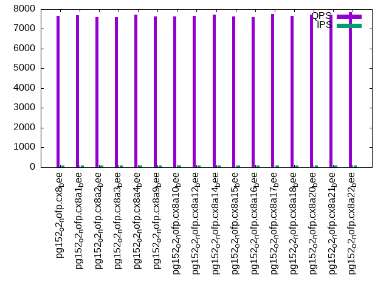

This is a report for the insert benchmark with 800M docs and 1 client(s). It is generated by scripts (bash, awk, sed) and Tufte might not be impressed. An overview of the insert benchmark is here and a short update is here. Below, by DBMS, I mean DBMS+version.config. An example is my8020.c10b40 where my means MySQL, 8020 is version 8.0.20 and c10b40 is the name for the configuration file.
The test server has 8 AMD cores, 16G RAM and an NVMe SSD. It is described here as the Beelink. The benchmark was run with 1 client and there were 1 or 3 connections per client (1 for queries or inserts without rate limits, 1+1 for rate limited inserts+deletes). It uses 1 table. It loads 800M rows per table without secondary indexes, creates secondary indexes, then inserts 10M rows per table with a delete per insert to avoid growing the table. It then does 3 read+write tests for 1800s each that do queries as fast as possible with 100, 500 and then 1000 inserts/second/client concurrent with the queries and 1000 deletes/second to avoid growing the table. The database is cached by Postgres. Clients and the DBMS share one server. The per-database configs are in the per-database subdirectories here.
The tested DBMS are:
The numbers are inserts/s for l.i0 and l.i1, indexed docs (or rows) /s for l.x and queries/s for q*.2. The values are the average rate over the entire test for inserts (IPS) and queries (QPS). The range of values for IPS and QPS is split into 3 parts: bottom 25%, middle 50%, top 25%. Values in the bottom 25% have a red background, values in the top 25% have a green background and values in the middle have no color. A gray background is used for values that can be ignored because the DBMS did not sustain the target insert rate. Red backgrounds are not used when the minimum value is within 80% of the max value.
| dbms | l.i0 | l.x | l.i1 | q100.1 | q500.1 | q1000.1 |
|---|---|---|---|---|---|---|
| pg152_o2_nofp.cx8_bee | 73590 | 198536 | 1473 | 7651 | 7822 | 7992 |
| pg152_o2_nofp.cx8a1_bee | 72946 | 193917 | 1246 | 7697 | 7693 | 7584 |
| pg152_o2_nofp.cx8a2_bee | 73354 | 198536 | 1494 | 7605 | 7710 | 7805 |
| pg152_o2_nofp.cx8a3_bee | 72760 | 199129 | 1158 | 7606 | 7768 | 7728 |
| pg152_o2_nofp.cx8a4_bee | 73039 | 198684 | 1170 | 7725 | 7733 | 7631 |
| pg152_o2_nofp.cx8a9_bee | 73053 | 198290 | 844 | 7631 | 7852 | 7944 |
| pg152_o2_nofp.cx8a10_bee | 72497 | 200275 | 1041 | 7624 | 7813 | 7688 |
| pg152_o2_nofp.cx8a12_bee | 72767 | 199427 | 841 | 7659 | 7875 | 7688 |
| pg152_o2_nofp.cx8a14_bee | 72418 | 198684 | 1478 | 7726 | 7758 | 7690 |
| pg152_o2_nofp.cx8a15_bee | 73006 | 197898 | 1529 | 7645 | 7768 | 7618 |
| pg152_o2_nofp.cx8a16_bee | 73146 | 199775 | 1428 | 7599 | 7766 | 7706 |
| pg152_o2_nofp.cx8a17_bee | 73327 | 198339 | 1149 | 7754 | 7768 | 7699 |
| pg152_o2_nofp.cx8a18_bee | 72820 | 198044 | 1304 | 7664 | 7855 | 7383 |
| pg152_o2_nofp.cx8a20_bee | 73644 | 199825 | 843 | 7734 | 7861 | 7734 |
| pg152_o2_nofp.cx8a21_bee | 73133 | 195719 | 1470 | 7734 | 7688 | 7697 |
| pg152_o2_nofp.cx8a22_bee | 73314 | 199278 | 1454 | 7845 | 7948 | 7812 |
This table has relative throughput, throughput for the DBMS relative to the DBMS in the first line, using the absolute throughput from the previous table. Values less than 0.95 have a yellow background. Values greater than 1.05 have a blue background.
| dbms | l.i0 | l.x | l.i1 | q100.1 | q500.1 | q1000.1 |
|---|---|---|---|---|---|---|
| pg152_o2_nofp.cx8_bee | 1.00 | 1.00 | 1.00 | 1.00 | 1.00 | 1.00 |
| pg152_o2_nofp.cx8a1_bee | 0.99 | 0.98 | 0.85 | 1.01 | 0.98 | 0.95 |
| pg152_o2_nofp.cx8a2_bee | 1.00 | 1.00 | 1.01 | 0.99 | 0.99 | 0.98 |
| pg152_o2_nofp.cx8a3_bee | 0.99 | 1.00 | 0.79 | 0.99 | 0.99 | 0.97 |
| pg152_o2_nofp.cx8a4_bee | 0.99 | 1.00 | 0.79 | 1.01 | 0.99 | 0.95 |
| pg152_o2_nofp.cx8a9_bee | 0.99 | 1.00 | 0.57 | 1.00 | 1.00 | 0.99 |
| pg152_o2_nofp.cx8a10_bee | 0.99 | 1.01 | 0.71 | 1.00 | 1.00 | 0.96 |
| pg152_o2_nofp.cx8a12_bee | 0.99 | 1.00 | 0.57 | 1.00 | 1.01 | 0.96 |
| pg152_o2_nofp.cx8a14_bee | 0.98 | 1.00 | 1.00 | 1.01 | 0.99 | 0.96 |
| pg152_o2_nofp.cx8a15_bee | 0.99 | 1.00 | 1.04 | 1.00 | 0.99 | 0.95 |
| pg152_o2_nofp.cx8a16_bee | 0.99 | 1.01 | 0.97 | 0.99 | 0.99 | 0.96 |
| pg152_o2_nofp.cx8a17_bee | 1.00 | 1.00 | 0.78 | 1.01 | 0.99 | 0.96 |
| pg152_o2_nofp.cx8a18_bee | 0.99 | 1.00 | 0.89 | 1.00 | 1.00 | 0.92 |
| pg152_o2_nofp.cx8a20_bee | 1.00 | 1.01 | 0.57 | 1.01 | 1.00 | 0.97 |
| pg152_o2_nofp.cx8a21_bee | 0.99 | 0.99 | 1.00 | 1.01 | 0.98 | 0.96 |
| pg152_o2_nofp.cx8a22_bee | 1.00 | 1.00 | 0.99 | 1.03 | 1.02 | 0.98 |
This lists the average rate of inserts/s for the tests that do inserts concurrent with queries. For such tests the query rate is listed in the table above. The read+write tests are setup so that the insert rate should match the target rate every second. Cells that are not at least 95% of the target have a red background to indicate a failure to satisfy the target.
| dbms | q100.1 | q500.1 | q1000.1 |
|---|---|---|---|
| pg152_o2_nofp.cx8_bee | 100 | 499 | 998 |
| pg152_o2_nofp.cx8a1_bee | 100 | 499 | 998 |
| pg152_o2_nofp.cx8a2_bee | 100 | 499 | 998 |
| pg152_o2_nofp.cx8a3_bee | 100 | 499 | 998 |
| pg152_o2_nofp.cx8a4_bee | 100 | 499 | 998 |
| pg152_o2_nofp.cx8a9_bee | 100 | 499 | 998 |
| pg152_o2_nofp.cx8a10_bee | 100 | 499 | 998 |
| pg152_o2_nofp.cx8a12_bee | 100 | 499 | 998 |
| pg152_o2_nofp.cx8a14_bee | 100 | 499 | 998 |
| pg152_o2_nofp.cx8a15_bee | 100 | 499 | 998 |
| pg152_o2_nofp.cx8a16_bee | 100 | 499 | 998 |
| pg152_o2_nofp.cx8a17_bee | 100 | 499 | 998 |
| pg152_o2_nofp.cx8a18_bee | 100 | 499 | 998 |
| pg152_o2_nofp.cx8a20_bee | 100 | 499 | 998 |
| pg152_o2_nofp.cx8a21_bee | 100 | 499 | 998 |
| pg152_o2_nofp.cx8a22_bee | 100 | 499 | 998 |
| target | 100 | 500 | 1000 |
l.i0: load without secondary indexes. Graphs for performance per 1-second interval are here.
Average throughput:
Insert response time histogram: each cell has the percentage of responses that take <= the time in the header and max is the max response time in seconds. For the max column values in the top 25% of the range have a red background and in the bottom 25% of the range have a green background. The red background is not used when the min value is within 80% of the max value.
| dbms | 256us | 1ms | 4ms | 16ms | 64ms | 256ms | 1s | 4s | 16s | gt | max |
|---|---|---|---|---|---|---|---|---|---|---|---|
| pg152_o2_nofp.cx8_bee | 99.998 | 0.001 | nonzero | nonzero | 0.123 | ||||||
| pg152_o2_nofp.cx8a1_bee | 99.999 | 0.001 | nonzero | 0.060 | |||||||
| pg152_o2_nofp.cx8a2_bee | 99.998 | 0.002 | 0.001 | 0.058 | |||||||
| pg152_o2_nofp.cx8a3_bee | 99.999 | nonzero | nonzero | 0.058 | |||||||
| pg152_o2_nofp.cx8a4_bee | 99.998 | 0.002 | nonzero | nonzero | 0.144 | ||||||
| pg152_o2_nofp.cx8a9_bee | 99.997 | 0.002 | 0.001 | nonzero | 0.079 | ||||||
| pg152_o2_nofp.cx8a10_bee | 99.995 | 0.003 | 0.001 | nonzero | 0.099 | ||||||
| pg152_o2_nofp.cx8a12_bee | 99.999 | 0.001 | nonzero | 0.056 | |||||||
| pg152_o2_nofp.cx8a14_bee | 99.998 | 0.001 | nonzero | 0.057 | |||||||
| pg152_o2_nofp.cx8a15_bee | 99.998 | 0.002 | nonzero | nonzero | 0.524 | ||||||
| pg152_o2_nofp.cx8a16_bee | 99.998 | 0.001 | nonzero | 0.056 | |||||||
| pg152_o2_nofp.cx8a17_bee | 99.997 | 0.002 | nonzero | nonzero | 0.129 | ||||||
| pg152_o2_nofp.cx8a18_bee | 99.999 | nonzero | nonzero | 0.057 | |||||||
| pg152_o2_nofp.cx8a20_bee | 99.999 | nonzero | nonzero | 0.056 | |||||||
| pg152_o2_nofp.cx8a21_bee | 99.999 | 0.001 | nonzero | 0.060 | |||||||
| pg152_o2_nofp.cx8a22_bee | 99.999 | 0.001 | nonzero | 0.056 |
Performance metrics for the DBMS listed above. Some are normalized by throughput, others are not. Legend for results is here.
ips qps rps rmbps wps wmbps rpq rkbpq wpi wkbpi csps cpups cspq cpupq dbgb1 dbgb2 rss maxop p50 p99 tag 73590 0 33 0.4 114.2 32.4 0.000 0.006 0.002 0.451 8985 23.1 0.122 25 76.5 116.6 0.0 0.123 73657 72517 800m.pg152_o2_nofp.cx8_bee 72946 0 33 0.4 109.9 31.6 0.000 0.006 0.002 0.443 8911 23.1 0.122 25 76.5 116.6 0.0 0.060 73019 71719 800m.pg152_o2_nofp.cx8a1_bee 73354 0 33 0.4 114.8 32.5 0.000 0.006 0.002 0.454 8955 23.1 0.122 25 76.5 116.6 0.0 0.058 73419 72218 800m.pg152_o2_nofp.cx8a2_bee 72760 0 35 0.7 112.0 30.4 0.000 0.009 0.002 0.428 8898 23.0 0.122 25 76.5 116.6 0.0 0.058 72850 71720 800m.pg152_o2_nofp.cx8a3_bee 73039 0 34 0.5 119.3 32.3 0.000 0.007 0.002 0.453 8916 23.2 0.122 25 76.5 116.6 0.0 0.144 73117 71818 800m.pg152_o2_nofp.cx8a4_bee 73053 0 32 0.4 116.1 32.9 0.000 0.005 0.002 0.461 8910 23.1 0.122 25 76.5 106.1 0.0 0.079 73158 71621 800m.pg152_o2_nofp.cx8a9_bee 72497 0 34 0.7 121.2 33.8 0.000 0.010 0.002 0.478 8857 23.1 0.122 25 76.5 116.6 0.0 0.099 72617 71318 800m.pg152_o2_nofp.cx8a10_bee 72767 0 33 0.5 115.6 32.5 0.000 0.007 0.002 0.457 8889 23.0 0.122 25 76.5 116.6 0.1 0.056 72855 71619 800m.pg152_o2_nofp.cx8a12_bee 72418 0 35 0.5 113.6 31.6 0.000 0.007 0.002 0.447 8883 23.0 0.123 25 76.5 116.6 0.0 0.057 72517 71219 800m.pg152_o2_nofp.cx8a14_bee 73006 0 34 0.5 125.6 34.4 0.000 0.007 0.002 0.483 8882 23.2 0.122 25 76.5 86.6 0.0 0.524 73117 71652 800m.pg152_o2_nofp.cx8a15_bee 73146 0 32 0.3 104.8 30.2 0.000 0.004 0.001 0.423 8920 23.1 0.122 25 76.5 116.6 0.0 0.056 73219 71821 800m.pg152_o2_nofp.cx8a16_bee 73327 0 34 0.4 113.4 32.1 0.000 0.006 0.002 0.448 8947 23.0 0.122 25 76.5 116.6 0.0 0.129 73418 72121 800m.pg152_o2_nofp.cx8a17_bee 72820 0 31 0.2 104.9 29.8 0.000 0.003 0.001 0.418 8893 22.9 0.122 25 76.5 116.6 0.0 0.057 72915 71759 800m.pg152_o2_nofp.cx8a18_bee 73644 0 30 0.2 106.2 30.3 0.000 0.003 0.001 0.422 8990 23.2 0.122 25 76.5 116.6 0.0 0.056 73717 72417 800m.pg152_o2_nofp.cx8a20_bee 73133 0 32 0.3 105.5 29.9 0.000 0.004 0.001 0.419 8932 23.1 0.122 25 76.5 116.6 0.0 0.060 73217 71821 800m.pg152_o2_nofp.cx8a21_bee 73314 0 31 0.2 105.7 30.2 0.000 0.003 0.001 0.422 8936 23.0 0.122 25 76.5 116.6 0.0 0.056 73416 72315 800m.pg152_o2_nofp.cx8a22_bee
l.x: create secondary indexes.
Average throughput:
Performance metrics for the DBMS listed above. Some are normalized by throughput, others are not. Legend for results is here.
ips qps rps rmbps wps wmbps rpq rkbpq wpi wkbpi csps cpups cspq cpupq dbgb1 dbgb2 rss maxop p50 p99 tag 198536 0 586 71.8 200.3 69.9 0.003 0.370 0.001 0.361 430 12.5 0.002 5 147.0 187.1 0.0 0.004 NA NA 800m.pg152_o2_nofp.cx8_bee 193917 0 573 70.2 177.6 62.2 0.003 0.371 0.001 0.328 377 12.6 0.002 5 147.0 187.1 0.0 0.005 NA NA 800m.pg152_o2_nofp.cx8a1_bee 198536 0 585 71.8 202.0 70.0 0.003 0.370 0.001 0.361 407 12.5 0.002 5 147.0 187.1 0.0 0.005 NA NA 800m.pg152_o2_nofp.cx8a2_bee 199129 0 582 71.7 191.1 68.0 0.003 0.369 0.001 0.350 424 12.4 0.002 5 147.0 187.1 0.0 0.005 NA NA 800m.pg152_o2_nofp.cx8a3_bee 198684 0 584 71.9 200.8 69.8 0.003 0.370 0.001 0.360 413 12.5 0.002 5 147.0 187.1 0.0 0.006 NA NA 800m.pg152_o2_nofp.cx8a4_bee 198290 0 584 71.8 206.6 72.5 0.003 0.371 0.001 0.374 434 12.5 0.002 5 147.0 176.6 0.0 0.005 NA NA 800m.pg152_o2_nofp.cx8a9_bee 200275 0 581 71.6 193.2 68.0 0.003 0.366 0.001 0.348 400 12.4 0.002 5 147.0 187.1 0.0 0.005 NA NA 800m.pg152_o2_nofp.cx8a10_bee 199427 0 589 72.2 204.7 72.2 0.003 0.371 0.001 0.371 423 12.5 0.002 5 147.0 187.1 0.0 0.003 NA NA 800m.pg152_o2_nofp.cx8a12_bee 198684 0 583 71.8 198.8 69.3 0.003 0.370 0.001 0.357 412 12.5 0.002 5 147.0 187.1 0.0 0.004 NA NA 800m.pg152_o2_nofp.cx8a14_bee 197898 0 582 71.7 205.4 71.5 0.003 0.371 0.001 0.370 402 12.5 0.002 5 147.0 157.1 0.0 0.005 NA NA 800m.pg152_o2_nofp.cx8a15_bee 199775 0 585 72.0 192.5 68.0 0.003 0.369 0.001 0.349 396 12.5 0.002 5 147.0 187.1 0.0 0.004 NA NA 800m.pg152_o2_nofp.cx8a16_bee 198339 0 583 71.8 209.8 72.6 0.003 0.371 0.001 0.375 413 12.5 0.002 5 147.0 187.1 0.0 0.004 NA NA 800m.pg152_o2_nofp.cx8a17_bee 198044 0 580 71.4 167.9 60.9 0.003 0.369 0.001 0.315 378 12.6 0.002 5 147.0 187.1 0.0 0.007 NA NA 800m.pg152_o2_nofp.cx8a18_bee 199825 0 586 72.0 194.7 68.2 0.003 0.369 0.001 0.350 388 12.4 0.002 5 147.0 187.1 0.0 0.004 NA NA 800m.pg152_o2_nofp.cx8a20_bee 195719 0 574 70.6 168.2 60.2 0.003 0.369 0.001 0.315 380 12.5 0.002 5 147.0 187.1 0.0 0.005 NA NA 800m.pg152_o2_nofp.cx8a21_bee 199278 0 584 71.9 193.3 68.2 0.003 0.369 0.001 0.350 404 12.5 0.002 5 147.0 187.1 0.0 0.006 NA NA 800m.pg152_o2_nofp.cx8a22_bee
l.i1: continue load after secondary indexes created. Graphs for performance per 1-second interval are here.
Average throughput:
Insert response time histogram: each cell has the percentage of responses that take <= the time in the header and max is the max response time in seconds. For the max column values in the top 25% of the range have a red background and in the bottom 25% of the range have a green background. The red background is not used when the min value is within 80% of the max value.
| dbms | 256us | 1ms | 4ms | 16ms | 64ms | 256ms | 1s | 4s | 16s | gt | max |
|---|---|---|---|---|---|---|---|---|---|---|---|
| pg152_o2_nofp.cx8_bee | 94.305 | 5.693 | 0.002 | 0.078 | |||||||
| pg152_o2_nofp.cx8a1_bee | 87.136 | 12.864 | 0.001 | 0.069 | |||||||
| pg152_o2_nofp.cx8a2_bee | 94.669 | 5.330 | 0.001 | 0.065 | |||||||
| pg152_o2_nofp.cx8a3_bee | 96.266 | 3.735 | 0.055 | ||||||||
| pg152_o2_nofp.cx8a4_bee | 94.079 | 5.919 | 0.002 | 0.067 | |||||||
| pg152_o2_nofp.cx8a9_bee | 92.633 | 7.366 | 0.057 | ||||||||
| pg152_o2_nofp.cx8a10_bee | 95.138 | 4.862 | 0.060 | ||||||||
| pg152_o2_nofp.cx8a12_bee | 94.309 | 5.691 | 0.062 | ||||||||
| pg152_o2_nofp.cx8a14_bee | 93.663 | 6.337 | 0.001 | 0.065 | |||||||
| pg152_o2_nofp.cx8a15_bee | 92.572 | 7.428 | 0.062 | ||||||||
| pg152_o2_nofp.cx8a16_bee | 92.805 | 7.187 | 0.008 | 0.144 | |||||||
| pg152_o2_nofp.cx8a17_bee | 81.029 | 18.904 | 0.067 | 0.214 | |||||||
| pg152_o2_nofp.cx8a18_bee | 88.890 | 11.110 | 0.001 | 0.070 | |||||||
| pg152_o2_nofp.cx8a20_bee | 92.492 | 7.508 | 0.064 | ||||||||
| pg152_o2_nofp.cx8a21_bee | 89.394 | 10.604 | 0.002 | 0.069 | |||||||
| pg152_o2_nofp.cx8a22_bee | 92.880 | 7.119 | 0.002 | 0.086 |
Delete response time histogram: each cell has the percentage of responses that take <= the time in the header and max is the max response time in seconds. For the max column values in the top 25% of the range have a red background and in the bottom 25% of the range have a green background. The red background is not used when the min value is within 80% of the max value.
| dbms | 256us | 1ms | 4ms | 16ms | 64ms | 256ms | 1s | 4s | 16s | gt | max |
|---|---|---|---|---|---|---|---|---|---|---|---|
| pg152_o2_nofp.cx8_bee | 0.003 | 30.128 | 2.154 | 10.919 | 41.547 | 15.249 | 0.001 | 0.310 | |||
| pg152_o2_nofp.cx8a1_bee | 0.001 | 21.827 | 2.071 | 11.068 | 41.308 | 23.726 | 0.096 | ||||
| pg152_o2_nofp.cx8a2_bee | 0.003 | 32.827 | 2.087 | 10.928 | 41.502 | 12.652 | 0.001 | 0.312 | |||
| pg152_o2_nofp.cx8a3_bee | 0.002 | 17.492 | 2.004 | 11.009 | 41.401 | 28.092 | 0.102 | ||||
| pg152_o2_nofp.cx8a4_bee | 0.003 | 18.334 | 2.027 | 11.023 | 41.512 | 27.101 | 0.100 | ||||
| pg152_o2_nofp.cx8a9_bee | 0.128 | 1.946 | 11.147 | 41.212 | 45.568 | 0.121 | |||||
| pg152_o2_nofp.cx8a10_bee | 0.003 | 11.807 | 1.991 | 11.166 | 41.528 | 33.505 | 0.110 | ||||
| pg152_o2_nofp.cx8a12_bee | 0.213 | 1.961 | 11.050 | 41.472 | 45.305 | 0.123 | |||||
| pg152_o2_nofp.cx8a14_bee | 0.005 | 30.255 | 2.055 | 11.159 | 41.279 | 15.248 | 0.087 | ||||
| pg152_o2_nofp.cx8a15_bee | 0.001 | 31.761 | 2.057 | 11.246 | 41.266 | 13.668 | 0.082 | ||||
| pg152_o2_nofp.cx8a16_bee | 0.004 | 28.662 | 1.954 | 11.127 | 41.459 | 16.794 | 0.089 | ||||
| pg152_o2_nofp.cx8a17_bee | 0.002 | 18.390 | 2.053 | 11.016 | 41.450 | 27.090 | 0.098 | ||||
| pg152_o2_nofp.cx8a18_bee | 0.003 | 24.075 | 1.867 | 11.293 | 41.247 | 21.516 | 0.092 | ||||
| pg152_o2_nofp.cx8a20_bee | 0.001 | 0.121 | 2.038 | 11.144 | 41.458 | 45.238 | 0.120 | ||||
| pg152_o2_nofp.cx8a21_bee | 0.003 | 30.152 | 2.008 | 11.236 | 41.314 | 15.287 | 0.088 | ||||
| pg152_o2_nofp.cx8a22_bee | 0.003 | 29.471 | 1.997 | 11.204 | 41.538 | 15.787 | 0.088 |
Performance metrics for the DBMS listed above. Some are normalized by throughput, others are not. Legend for results is here.
ips qps rps rmbps wps wmbps rpq rkbpq wpi wkbpi csps cpups cspq cpupq dbgb1 dbgb2 rss maxop p50 p99 tag 1473 0 2383 18.9 2677.7 37.8 1.618 13.175 1.818 26.252 5694 13.4 3.866 728 148.8 188.8 0.0 0.078 949 599 800m.pg152_o2_nofp.cx8_bee 1246 0 2005 15.9 2236.0 26.1 1.610 13.106 1.795 21.480 4786 13.7 3.842 880 148.8 188.6 0.0 0.069 799 549 800m.pg152_o2_nofp.cx8a1_bee 1494 0 2418 19.2 2716.7 38.1 1.618 13.180 1.818 26.085 5766 13.3 3.859 712 148.8 188.8 0.0 0.065 949 449 800m.pg152_o2_nofp.cx8a2_bee 1158 0 1873 15.0 2060.9 17.0 1.618 13.234 1.780 15.016 4438 13.4 3.834 926 148.8 187.6 0.0 0.055 749 499 800m.pg152_o2_nofp.cx8a3_bee 1170 0 1890 15.0 2139.8 30.2 1.616 13.126 1.829 26.470 4552 13.6 3.890 930 148.8 188.8 0.0 0.067 799 499 800m.pg152_o2_nofp.cx8a4_bee 844 0 1362 10.8 1573.3 24.7 1.614 13.105 1.864 29.996 3326 13.8 3.940 1308 148.8 175.0 0.0 0.057 599 400 800m.pg152_o2_nofp.cx8a9_bee 1041 0 1684 13.4 1901.3 27.1 1.618 13.141 1.826 26.670 4058 13.7 3.897 1053 148.8 188.8 0.0 0.060 699 499 800m.pg152_o2_nofp.cx8a10_bee 841 0 1358 10.8 1543.3 22.3 1.614 13.111 1.834 27.187 3304 13.7 3.928 1303 148.8 187.2 0.0 0.062 599 400 800m.pg152_o2_nofp.cx8a12_bee 1478 0 2384 18.9 2691.0 38.0 1.613 13.106 1.821 26.365 5693 13.3 3.853 720 148.8 188.8 0.0 0.065 949 599 800m.pg152_o2_nofp.cx8a14_bee 1529 0 2460 19.5 2972.4 48.3 1.608 13.060 1.944 32.314 5925 13.7 3.875 717 148.8 158.8 0.0 0.062 999 599 800m.pg152_o2_nofp.cx8a15_bee 1428 0 2315 18.8 2611.8 38.0 1.621 13.462 1.829 27.227 5543 13.4 3.881 751 148.8 188.8 0.0 0.144 949 599 800m.pg152_o2_nofp.cx8a16_bee 1149 0 1905 20.8 2173.1 37.2 1.658 18.552 1.892 33.182 4578 13.7 3.986 954 148.7 188.8 9.2 0.214 799 499 800m.pg152_o2_nofp.cx8a17_bee 1304 0 2110 16.8 2343.2 27.4 1.619 13.178 1.797 21.554 5022 13.7 3.852 841 148.8 187.9 0.0 0.070 849 549 800m.pg152_o2_nofp.cx8a18_bee 843 0 1369 10.9 1547.7 22.4 1.624 13.188 1.836 27.205 3329 13.8 3.949 1310 148.8 187.4 0.0 0.064 599 400 800m.pg152_o2_nofp.cx8a20_bee 1470 0 2378 18.9 2637.2 30.9 1.618 13.176 1.794 21.525 5644 13.6 3.840 740 148.8 188.8 0.0 0.069 949 599 800m.pg152_o2_nofp.cx8a21_bee 1454 0 2355 18.7 2647.3 37.2 1.619 13.158 1.820 26.168 5642 13.3 3.879 732 148.8 188.8 0.0 0.086 949 599 800m.pg152_o2_nofp.cx8a22_bee
q100.1: range queries with 100 insert/s per client. Graphs for performance per 1-second interval are here.
Average throughput:
Query response time histogram: each cell has the percentage of responses that take <= the time in the header and max is the max response time in seconds. For max values in the top 25% of the range have a red background and in the bottom 25% of the range have a green background. The red background is not used when the min value is within 80% of the max value.
| dbms | 256us | 1ms | 4ms | 16ms | 64ms | 256ms | 1s | 4s | 16s | gt | max |
|---|---|---|---|---|---|---|---|---|---|---|---|
| pg152_o2_nofp.cx8_bee | 99.042 | 0.946 | 0.009 | 0.003 | nonzero | 0.030 | |||||
| pg152_o2_nofp.cx8a1_bee | 99.046 | 0.938 | 0.012 | 0.003 | nonzero | 0.032 | |||||
| pg152_o2_nofp.cx8a2_bee | 99.165 | 0.820 | 0.011 | 0.004 | nonzero | 0.019 | |||||
| pg152_o2_nofp.cx8a3_bee | 99.029 | 0.953 | 0.015 | 0.002 | nonzero | 0.019 | |||||
| pg152_o2_nofp.cx8a4_bee | 99.055 | 0.931 | 0.010 | 0.004 | nonzero | 0.032 | |||||
| pg152_o2_nofp.cx8a9_bee | 99.080 | 0.912 | 0.007 | 0.001 | nonzero | 0.020 | |||||
| pg152_o2_nofp.cx8a10_bee | 99.033 | 0.954 | 0.010 | 0.004 | nonzero | 0.019 | |||||
| pg152_o2_nofp.cx8a12_bee | 99.074 | 0.913 | 0.009 | 0.004 | nonzero | 0.033 | |||||
| pg152_o2_nofp.cx8a14_bee | 99.092 | 0.896 | 0.009 | 0.003 | nonzero | 0.025 | |||||
| pg152_o2_nofp.cx8a15_bee | 99.200 | 0.794 | 0.003 | 0.003 | 0.015 | ||||||
| pg152_o2_nofp.cx8a16_bee | 99.098 | 0.887 | 0.010 | 0.005 | nonzero | 0.031 | |||||
| pg152_o2_nofp.cx8a17_bee | 99.100 | 0.885 | 0.011 | 0.004 | nonzero | 0.024 | |||||
| pg152_o2_nofp.cx8a18_bee | 99.039 | 0.945 | 0.014 | 0.003 | nonzero | 0.020 | |||||
| pg152_o2_nofp.cx8a20_bee | 99.099 | 0.891 | 0.007 | 0.003 | nonzero | 0.030 | |||||
| pg152_o2_nofp.cx8a21_bee | 99.107 | 0.880 | 0.010 | 0.003 | nonzero | 0.021 | |||||
| pg152_o2_nofp.cx8a22_bee | 99.122 | 0.866 | 0.009 | 0.003 | nonzero | 0.024 |
Insert response time histogram: each cell has the percentage of responses that take <= the time in the header and max is the max response time in seconds. For max values in the top 25% of the range have a red background and in the bottom 25% of the range have a green background. The red background is not used when the min value is within 80% of the max value.
| dbms | 256us | 1ms | 4ms | 16ms | 64ms | 256ms | 1s | 4s | 16s | gt | max |
|---|---|---|---|---|---|---|---|---|---|---|---|
| pg152_o2_nofp.cx8_bee | 68.361 | 31.639 | 0.031 | ||||||||
| pg152_o2_nofp.cx8a1_bee | 47.556 | 52.444 | 0.033 | ||||||||
| pg152_o2_nofp.cx8a2_bee | 55.972 | 44.028 | 0.059 | ||||||||
| pg152_o2_nofp.cx8a3_bee | 66.694 | 33.306 | 0.059 | ||||||||
| pg152_o2_nofp.cx8a4_bee | 56.472 | 43.528 | 0.044 | ||||||||
| pg152_o2_nofp.cx8a9_bee | 82.361 | 17.639 | 0.040 | ||||||||
| pg152_o2_nofp.cx8a10_bee | 63.611 | 36.389 | 0.031 | ||||||||
| pg152_o2_nofp.cx8a12_bee | 61.306 | 38.694 | 0.032 | ||||||||
| pg152_o2_nofp.cx8a14_bee | 66.750 | 33.250 | 0.031 | ||||||||
| pg152_o2_nofp.cx8a15_bee | 73.972 | 26.028 | 0.049 | ||||||||
| pg152_o2_nofp.cx8a16_bee | 59.056 | 40.944 | 0.031 | ||||||||
| pg152_o2_nofp.cx8a17_bee | 54.389 | 45.611 | 0.053 | ||||||||
| pg152_o2_nofp.cx8a18_bee | 60.000 | 40.000 | 0.033 | ||||||||
| pg152_o2_nofp.cx8a20_bee | 73.778 | 26.222 | 0.030 | ||||||||
| pg152_o2_nofp.cx8a21_bee | 54.389 | 45.611 | 0.033 | ||||||||
| pg152_o2_nofp.cx8a22_bee | 72.333 | 27.667 | 0.031 |
Delete response time histogram: each cell has the percentage of responses that take <= the time in the header and max is the max response time in seconds. For max values in the top 25% of the range have a red background and in the bottom 25% of the range have a green background. The red background is not used when the min value is within 80% of the max value.
| dbms | 256us | 1ms | 4ms | 16ms | 64ms | 256ms | 1s | 4s | 16s | gt | max |
|---|---|---|---|---|---|---|---|---|---|---|---|
| pg152_o2_nofp.cx8_bee | 21.444 | 78.278 | 0.278 | 0.009 | |||||||
| pg152_o2_nofp.cx8a1_bee | 0.556 | 98.917 | 0.139 | 0.389 | 0.007 | ||||||
| pg152_o2_nofp.cx8a2_bee | 20.750 | 77.944 | 1.306 | 0.009 | |||||||
| pg152_o2_nofp.cx8a3_bee | 1.000 | 98.528 | 0.250 | 0.222 | 0.006 | ||||||
| pg152_o2_nofp.cx8a4_bee | 0.972 | 98.583 | 0.167 | 0.278 | 0.009 | ||||||
| pg152_o2_nofp.cx8a9_bee | 20.500 | 79.194 | 0.306 | 0.009 | |||||||
| pg152_o2_nofp.cx8a10_bee | 0.917 | 98.833 | 0.056 | 0.194 | 0.007 | ||||||
| pg152_o2_nofp.cx8a12_bee | 0.028 | 20.806 | 78.944 | 0.222 | 0.009 | ||||||
| pg152_o2_nofp.cx8a14_bee | 0.528 | 99.306 | 0.083 | 0.083 | 0.009 | ||||||
| pg152_o2_nofp.cx8a15_bee | 0.778 | 99.111 | 0.083 | 0.028 | 0.007 | ||||||
| pg152_o2_nofp.cx8a16_bee | 0.278 | 99.278 | 0.306 | 0.139 | 0.009 | ||||||
| pg152_o2_nofp.cx8a17_bee | 0.583 | 98.167 | 0.333 | 0.917 | 0.009 | ||||||
| pg152_o2_nofp.cx8a18_bee | 0.417 | 99.528 | 0.028 | 0.028 | 0.009 | ||||||
| pg152_o2_nofp.cx8a20_bee | 20.222 | 79.722 | 0.056 | 0.008 | |||||||
| pg152_o2_nofp.cx8a21_bee | 1.083 | 97.556 | 0.167 | 1.194 | 0.007 | ||||||
| pg152_o2_nofp.cx8a22_bee | 0.417 | 99.444 | 0.056 | 0.083 | 0.009 |
Performance metrics for the DBMS listed above. Some are normalized by throughput, others are not. Legend for results is here.
ips qps rps rmbps wps wmbps rpq rkbpq wpi wkbpi csps cpups cspq cpupq dbgb1 dbgb2 rss maxop p50 p99 tag 100 7651 254 2.1 253.9 3.8 0.033 0.278 2.547 38.633 29947 13.1 3.914 137 148.8 188.8 0.0 0.030 7431 4809 800m.pg152_o2_nofp.cx8_bee 100 7697 257 2.1 373.6 4.1 0.033 0.280 3.744 42.100 30099 12.9 3.911 134 148.8 188.8 0.0 0.032 7477 4650 800m.pg152_o2_nofp.cx8a1_bee 100 7605 253 2.1 289.3 3.7 0.033 0.278 2.899 37.709 29766 13.0 3.914 137 148.8 188.8 0.0 0.019 7352 4890 800m.pg152_o2_nofp.cx8a2_bee 100 7606 257 2.1 442.8 3.8 0.034 0.284 4.437 38.622 29745 13.0 3.910 137 148.8 186.0 0.0 0.019 7416 4667 800m.pg152_o2_nofp.cx8a3_bee 100 7725 254 2.1 272.9 3.7 0.033 0.275 2.735 38.124 30182 13.1 3.907 136 148.8 188.8 0.0 0.032 7431 4888 800m.pg152_o2_nofp.cx8a4_bee 100 7631 254 2.1 400.2 5.3 0.033 0.278 4.010 54.593 29909 13.2 3.919 138 148.8 188.8 0.0 0.020 7367 4938 800m.pg152_o2_nofp.cx8a9_bee 100 7624 255 2.1 303.1 3.9 0.033 0.280 3.037 39.744 29812 13.0 3.911 136 148.8 188.8 0.0 0.019 7365 4826 800m.pg152_o2_nofp.cx8a10_bee 100 7659 255 2.1 278.4 3.9 0.033 0.278 2.789 39.806 29948 12.9 3.910 135 148.8 188.8 0.0 0.033 7400 4825 800m.pg152_o2_nofp.cx8a12_bee 100 7726 254 2.1 297.3 3.6 0.033 0.275 2.979 36.852 30203 13.2 3.909 137 148.8 188.8 0.0 0.025 7447 4841 800m.pg152_o2_nofp.cx8a14_bee 100 7645 237 1.9 142.7 2.7 0.031 0.256 1.431 28.137 29876 13.0 3.908 136 148.8 158.8 0.0 0.015 7446 5049 800m.pg152_o2_nofp.cx8a15_bee 100 7599 252 2.1 222.8 3.2 0.033 0.277 2.233 32.876 29710 12.7 3.910 134 148.8 188.8 0.0 0.031 7415 4986 800m.pg152_o2_nofp.cx8a16_bee 100 7754 253 2.1 269.3 3.6 0.033 0.273 2.698 36.472 30330 13.2 3.911 136 148.7 188.8 0.0 0.024 7421 4762 800m.pg152_o2_nofp.cx8a17_bee 100 7664 258 2.1 449.6 4.7 0.034 0.283 4.505 48.082 30000 13.0 3.914 136 148.8 187.7 0.0 0.020 7446 4538 800m.pg152_o2_nofp.cx8a18_bee 100 7734 254 2.1 292.1 3.9 0.033 0.274 2.930 40.513 30261 13.2 3.913 137 148.8 188.8 0.0 0.030 7494 4937 800m.pg152_o2_nofp.cx8a20_bee 100 7734 254 2.1 333.5 3.4 0.033 0.274 3.342 35.353 30250 13.1 3.911 136 148.8 187.9 0.0 0.021 7511 4986 800m.pg152_o2_nofp.cx8a21_bee 100 7845 255 2.1 298.9 3.6 0.032 0.272 2.995 37.369 30666 12.8 3.909 131 148.8 188.8 0.0 0.024 7590 4795 800m.pg152_o2_nofp.cx8a22_bee
q500.1: range queries with 500 insert/s per client. Graphs for performance per 1-second interval are here.
Average throughput:
Query response time histogram: each cell has the percentage of responses that take <= the time in the header and max is the max response time in seconds. For max values in the top 25% of the range have a red background and in the bottom 25% of the range have a green background. The red background is not used when the min value is within 80% of the max value.
| dbms | 256us | 1ms | 4ms | 16ms | 64ms | 256ms | 1s | 4s | 16s | gt | max |
|---|---|---|---|---|---|---|---|---|---|---|---|
| pg152_o2_nofp.cx8_bee | 99.900 | 0.097 | 0.001 | 0.003 | 0.016 | ||||||
| pg152_o2_nofp.cx8a1_bee | 99.890 | 0.108 | 0.001 | 0.002 | 0.010 | ||||||
| pg152_o2_nofp.cx8a2_bee | 99.880 | 0.116 | 0.001 | 0.002 | 0.014 | ||||||
| pg152_o2_nofp.cx8a3_bee | 99.899 | 0.098 | 0.001 | 0.003 | 0.010 | ||||||
| pg152_o2_nofp.cx8a4_bee | 99.908 | 0.089 | nonzero | 0.002 | 0.016 | ||||||
| pg152_o2_nofp.cx8a9_bee | 99.887 | 0.110 | 0.001 | 0.002 | 0.015 | ||||||
| pg152_o2_nofp.cx8a10_bee | 99.909 | 0.089 | 0.001 | 0.002 | 0.010 | ||||||
| pg152_o2_nofp.cx8a12_bee | 99.890 | 0.108 | 0.001 | 0.002 | 0.015 | ||||||
| pg152_o2_nofp.cx8a14_bee | 99.903 | 0.094 | 0.001 | 0.002 | nonzero | 0.016 | |||||
| pg152_o2_nofp.cx8a15_bee | 99.892 | 0.101 | 0.001 | 0.006 | 0.016 | ||||||
| pg152_o2_nofp.cx8a16_bee | 99.905 | 0.093 | 0.001 | 0.002 | 0.015 | ||||||
| pg152_o2_nofp.cx8a17_bee | 99.901 | 0.096 | 0.001 | 0.002 | 0.016 | ||||||
| pg152_o2_nofp.cx8a18_bee | 99.907 | 0.091 | nonzero | 0.002 | 0.011 | ||||||
| pg152_o2_nofp.cx8a20_bee | 99.901 | 0.096 | nonzero | 0.003 | 0.010 | ||||||
| pg152_o2_nofp.cx8a21_bee | 99.905 | 0.092 | nonzero | 0.003 | 0.015 | ||||||
| pg152_o2_nofp.cx8a22_bee | 99.915 | 0.082 | 0.001 | 0.002 | 0.015 |
Insert response time histogram: each cell has the percentage of responses that take <= the time in the header and max is the max response time in seconds. For max values in the top 25% of the range have a red background and in the bottom 25% of the range have a green background. The red background is not used when the min value is within 80% of the max value.
| dbms | 256us | 1ms | 4ms | 16ms | 64ms | 256ms | 1s | 4s | 16s | gt | max |
|---|---|---|---|---|---|---|---|---|---|---|---|
| pg152_o2_nofp.cx8_bee | 93.033 | 6.967 | 0.031 | ||||||||
| pg152_o2_nofp.cx8a1_bee | 90.289 | 9.711 | 0.033 | ||||||||
| pg152_o2_nofp.cx8a2_bee | 93.083 | 6.917 | 0.030 | ||||||||
| pg152_o2_nofp.cx8a3_bee | 94.617 | 5.383 | 0.030 | ||||||||
| pg152_o2_nofp.cx8a4_bee | 94.328 | 5.672 | 0.031 | ||||||||
| pg152_o2_nofp.cx8a9_bee | 94.017 | 5.983 | 0.030 | ||||||||
| pg152_o2_nofp.cx8a10_bee | 93.006 | 6.994 | 0.030 | ||||||||
| pg152_o2_nofp.cx8a12_bee | 94.667 | 5.333 | 0.030 | ||||||||
| pg152_o2_nofp.cx8a14_bee | 93.861 | 6.139 | 0.030 | ||||||||
| pg152_o2_nofp.cx8a15_bee | 91.133 | 8.867 | 0.030 | ||||||||
| pg152_o2_nofp.cx8a16_bee | 94.239 | 5.761 | 0.030 | ||||||||
| pg152_o2_nofp.cx8a17_bee | 93.806 | 6.194 | 0.030 | ||||||||
| pg152_o2_nofp.cx8a18_bee | 91.256 | 8.744 | 0.032 | ||||||||
| pg152_o2_nofp.cx8a20_bee | 93.128 | 6.872 | 0.031 | ||||||||
| pg152_o2_nofp.cx8a21_bee | 91.439 | 8.561 | 0.032 | ||||||||
| pg152_o2_nofp.cx8a22_bee | 93.478 | 6.522 | 0.032 |
Delete response time histogram: each cell has the percentage of responses that take <= the time in the header and max is the max response time in seconds. For max values in the top 25% of the range have a red background and in the bottom 25% of the range have a green background. The red background is not used when the min value is within 80% of the max value.
| dbms | 256us | 1ms | 4ms | 16ms | 64ms | 256ms | 1s | 4s | 16s | gt | max |
|---|---|---|---|---|---|---|---|---|---|---|---|
| pg152_o2_nofp.cx8_bee | 5.711 | 93.283 | 1.006 | 0.020 | |||||||
| pg152_o2_nofp.cx8a1_bee | 2.550 | 97.067 | 0.061 | 0.322 | 0.009 | ||||||
| pg152_o2_nofp.cx8a2_bee | 6.911 | 92.606 | 0.483 | 0.019 | |||||||
| pg152_o2_nofp.cx8a3_bee | 3.928 | 95.911 | 0.050 | 0.111 | 0.007 | ||||||
| pg152_o2_nofp.cx8a4_bee | 3.528 | 95.378 | 0.239 | 0.856 | 0.011 | ||||||
| pg152_o2_nofp.cx8a9_bee | 6.422 | 92.761 | 0.817 | 0.017 | |||||||
| pg152_o2_nofp.cx8a10_bee | 3.078 | 96.328 | 0.078 | 0.517 | 0.008 | ||||||
| pg152_o2_nofp.cx8a12_bee | 5.983 | 93.061 | 0.956 | 0.020 | |||||||
| pg152_o2_nofp.cx8a14_bee | 3.939 | 95.217 | 0.144 | 0.700 | 0.008 | ||||||
| pg152_o2_nofp.cx8a15_bee | 4.650 | 94.900 | 0.111 | 0.339 | 0.009 | ||||||
| pg152_o2_nofp.cx8a16_bee | 3.083 | 96.078 | 0.178 | 0.661 | 0.008 | ||||||
| pg152_o2_nofp.cx8a17_bee | 3.772 | 95.478 | 0.183 | 0.567 | 0.008 | ||||||
| pg152_o2_nofp.cx8a18_bee | 2.544 | 97.228 | 0.072 | 0.156 | 0.007 | ||||||
| pg152_o2_nofp.cx8a20_bee | 6.428 | 92.639 | 0.933 | 0.018 | |||||||
| pg152_o2_nofp.cx8a21_bee | 2.806 | 96.894 | 0.078 | 0.222 | 0.008 | ||||||
| pg152_o2_nofp.cx8a22_bee | 3.811 | 95.794 | 0.128 | 0.267 | 0.007 |
Performance metrics for the DBMS listed above. Some are normalized by throughput, others are not. Legend for results is here.
ips qps rps rmbps wps wmbps rpq rkbpq wpi wkbpi csps cpups cspq cpupq dbgb1 dbgb2 rss maxop p50 p99 tag 499 7822 805 6.4 985.7 14.9 0.103 0.840 1.976 30.565 31917 15.1 4.081 154 148.8 188.8 0.0 0.016 7478 7254 800m.pg152_o2_nofp.cx8_bee 499 7693 801 6.4 933.8 12.2 0.104 0.850 1.871 25.095 31385 14.3 4.079 149 148.8 188.8 0.0 0.010 7399 7144 800m.pg152_o2_nofp.cx8a1_bee 499 7710 807 6.4 949.8 14.8 0.105 0.854 1.903 30.457 31483 15.1 4.084 157 148.8 188.8 0.0 0.014 7302 7046 800m.pg152_o2_nofp.cx8a2_bee 499 7768 802 6.4 885.0 7.5 0.103 0.848 1.773 15.317 31584 13.8 4.066 142 148.8 185.7 0.0 0.010 7416 7195 800m.pg152_o2_nofp.cx8a3_bee 499 7733 801 6.4 937.4 14.7 0.104 0.845 1.879 30.223 31571 14.1 4.082 146 148.8 188.8 0.0 0.016 7383 7176 800m.pg152_o2_nofp.cx8a4_bee 499 7852 805 6.4 948.2 15.5 0.103 0.837 1.900 31.769 32072 15.2 4.085 155 148.8 185.3 0.0 0.015 7431 7146 800m.pg152_o2_nofp.cx8a9_bee 499 7813 804 6.4 931.3 14.7 0.103 0.839 1.866 30.164 31856 14.1 4.077 144 148.8 188.8 0.0 0.010 7389 7128 800m.pg152_o2_nofp.cx8a10_bee 499 7875 805 6.4 973.4 14.9 0.102 0.834 1.952 30.678 32120 15.1 4.079 153 148.8 188.8 0.0 0.015 7446 7212 800m.pg152_o2_nofp.cx8a12_bee 499 7758 801 6.4 925.4 14.6 0.103 0.842 1.854 30.054 31646 14.0 4.079 144 148.8 188.8 0.0 0.016 7414 7176 800m.pg152_o2_nofp.cx8a14_bee 499 7768 802 6.4 1024.0 16.6 0.103 0.842 2.053 34.099 31794 14.1 4.093 145 148.8 158.8 0.0 0.016 7400 7158 800m.pg152_o2_nofp.cx8a15_bee 499 7766 801 6.4 944.1 14.7 0.103 0.841 1.892 30.251 31692 14.1 4.081 145 148.8 188.8 0.0 0.015 7400 7144 800m.pg152_o2_nofp.cx8a16_bee 499 7768 800 6.4 916.8 14.5 0.103 0.841 1.837 29.833 31682 14.1 4.079 145 148.7 188.8 0.0 0.016 7431 7205 800m.pg152_o2_nofp.cx8a17_bee 499 7855 802 6.4 931.2 12.2 0.102 0.833 1.867 25.091 32012 14.5 4.075 148 148.8 187.7 0.0 0.011 7447 7195 800m.pg152_o2_nofp.cx8a18_bee 499 7861 805 6.4 949.2 14.8 0.102 0.835 1.903 30.449 32059 15.1 4.078 154 148.8 188.8 0.0 0.010 7527 7279 800m.pg152_o2_nofp.cx8a20_bee 499 7688 801 6.4 906.0 12.0 0.104 0.852 1.815 24.536 31356 14.1 4.079 147 148.8 187.9 0.0 0.015 7447 7192 800m.pg152_o2_nofp.cx8a21_bee 499 7948 801 6.4 927.5 14.7 0.101 0.822 1.858 30.098 32382 13.8 4.074 139 148.8 188.8 0.0 0.015 7575 7303 800m.pg152_o2_nofp.cx8a22_bee
q1000.1: range queries with 1000 insert/s per client. Graphs for performance per 1-second interval are here.
Average throughput:
Query response time histogram: each cell has the percentage of responses that take <= the time in the header and max is the max response time in seconds. For max values in the top 25% of the range have a red background and in the bottom 25% of the range have a green background. The red background is not used when the min value is within 80% of the max value.
| dbms | 256us | 1ms | 4ms | 16ms | 64ms | 256ms | 1s | 4s | 16s | gt | max |
|---|---|---|---|---|---|---|---|---|---|---|---|
| pg152_o2_nofp.cx8_bee | 99.802 | 0.187 | 0.003 | 0.008 | 0.016 | ||||||
| pg152_o2_nofp.cx8a1_bee | 99.854 | 0.138 | 0.001 | 0.007 | 0.016 | ||||||
| pg152_o2_nofp.cx8a2_bee | 99.792 | 0.198 | 0.002 | 0.008 | 0.015 | ||||||
| pg152_o2_nofp.cx8a3_bee | 99.869 | 0.125 | 0.001 | 0.005 | 0.010 | ||||||
| pg152_o2_nofp.cx8a4_bee | 99.836 | 0.154 | 0.001 | 0.009 | 0.016 | ||||||
| pg152_o2_nofp.cx8a9_bee | 99.790 | 0.203 | 0.003 | 0.004 | 0.015 | ||||||
| pg152_o2_nofp.cx8a10_bee | 99.840 | 0.150 | 0.001 | 0.009 | 0.016 | ||||||
| pg152_o2_nofp.cx8a12_bee | 99.829 | 0.161 | 0.001 | 0.009 | 0.015 | ||||||
| pg152_o2_nofp.cx8a14_bee | 99.854 | 0.136 | 0.001 | 0.009 | 0.015 | ||||||
| pg152_o2_nofp.cx8a15_bee | 99.821 | 0.171 | 0.002 | 0.007 | 0.016 | ||||||
| pg152_o2_nofp.cx8a16_bee | 99.839 | 0.150 | 0.001 | 0.009 | 0.015 | ||||||
| pg152_o2_nofp.cx8a17_bee | 99.852 | 0.140 | 0.001 | 0.007 | 0.011 | ||||||
| pg152_o2_nofp.cx8a18_bee | 99.842 | 0.149 | 0.001 | 0.007 | 0.016 | ||||||
| pg152_o2_nofp.cx8a20_bee | 99.834 | 0.156 | 0.002 | 0.009 | 0.012 | ||||||
| pg152_o2_nofp.cx8a21_bee | 99.845 | 0.148 | 0.001 | 0.006 | 0.010 | ||||||
| pg152_o2_nofp.cx8a22_bee | 99.845 | 0.146 | 0.001 | 0.009 | 0.016 |
Insert response time histogram: each cell has the percentage of responses that take <= the time in the header and max is the max response time in seconds. For max values in the top 25% of the range have a red background and in the bottom 25% of the range have a green background. The red background is not used when the min value is within 80% of the max value.
| dbms | 256us | 1ms | 4ms | 16ms | 64ms | 256ms | 1s | 4s | 16s | gt | max |
|---|---|---|---|---|---|---|---|---|---|---|---|
| pg152_o2_nofp.cx8_bee | 97.661 | 2.339 | 0.029 | ||||||||
| pg152_o2_nofp.cx8a1_bee | 96.808 | 3.192 | 0.030 | ||||||||
| pg152_o2_nofp.cx8a2_bee | 97.197 | 2.803 | 0.030 | ||||||||
| pg152_o2_nofp.cx8a3_bee | 98.025 | 1.975 | 0.029 | ||||||||
| pg152_o2_nofp.cx8a4_bee | 96.856 | 3.144 | 0.030 | ||||||||
| pg152_o2_nofp.cx8a9_bee | 96.850 | 3.150 | 0.029 | ||||||||
| pg152_o2_nofp.cx8a10_bee | 97.208 | 2.792 | 0.028 | ||||||||
| pg152_o2_nofp.cx8a12_bee | 96.697 | 3.303 | 0.029 | ||||||||
| pg152_o2_nofp.cx8a14_bee | 97.153 | 2.847 | 0.029 | ||||||||
| pg152_o2_nofp.cx8a15_bee | 95.806 | 4.194 | 0.030 | ||||||||
| pg152_o2_nofp.cx8a16_bee | 97.072 | 2.928 | 0.029 | ||||||||
| pg152_o2_nofp.cx8a17_bee | 97.047 | 2.953 | 0.040 | ||||||||
| pg152_o2_nofp.cx8a18_bee | 96.683 | 3.317 | 0.030 | ||||||||
| pg152_o2_nofp.cx8a20_bee | 96.947 | 3.053 | 0.029 | ||||||||
| pg152_o2_nofp.cx8a21_bee | 97.436 | 2.564 | 0.031 | ||||||||
| pg152_o2_nofp.cx8a22_bee | 97.083 | 2.917 | 0.029 |
Delete response time histogram: each cell has the percentage of responses that take <= the time in the header and max is the max response time in seconds. For max values in the top 25% of the range have a red background and in the bottom 25% of the range have a green background. The red background is not used when the min value is within 80% of the max value.
| dbms | 256us | 1ms | 4ms | 16ms | 64ms | 256ms | 1s | 4s | 16s | gt | max |
|---|---|---|---|---|---|---|---|---|---|---|---|
| pg152_o2_nofp.cx8_bee | 14.072 | 85.928 | 0.042 | ||||||||
| pg152_o2_nofp.cx8a1_bee | 1.458 | 98.414 | 0.083 | 0.044 | 0.010 | ||||||
| pg152_o2_nofp.cx8a2_bee | 14.047 | 85.953 | 0.043 | ||||||||
| pg152_o2_nofp.cx8a3_bee | 2.094 | 97.808 | 0.056 | 0.042 | 0.010 | ||||||
| pg152_o2_nofp.cx8a4_bee | 2.531 | 97.333 | 0.069 | 0.067 | 0.007 | ||||||
| pg152_o2_nofp.cx8a9_bee | 14.181 | 85.819 | 0.043 | ||||||||
| pg152_o2_nofp.cx8a10_bee | 2.633 | 97.261 | 0.050 | 0.056 | 0.008 | ||||||
| pg152_o2_nofp.cx8a12_bee | 2.631 | 85.686 | 0.036 | 11.278 | 0.369 | 0.043 | |||||
| pg152_o2_nofp.cx8a14_bee | 2.697 | 97.144 | 0.083 | 0.075 | 0.008 | ||||||
| pg152_o2_nofp.cx8a15_bee | 2.328 | 97.517 | 0.075 | 0.081 | 0.007 | ||||||
| pg152_o2_nofp.cx8a16_bee | 2.653 | 97.197 | 0.064 | 0.086 | 0.008 | ||||||
| pg152_o2_nofp.cx8a17_bee | 2.878 | 96.967 | 0.100 | 0.056 | 0.009 | ||||||
| pg152_o2_nofp.cx8a18_bee | 1.556 | 98.308 | 0.078 | 0.058 | 0.010 | ||||||
| pg152_o2_nofp.cx8a20_bee | 2.422 | 82.617 | 0.031 | 13.381 | 1.550 | 0.033 | |||||
| pg152_o2_nofp.cx8a21_bee | 1.700 | 98.178 | 0.072 | 0.050 | 0.009 | ||||||
| pg152_o2_nofp.cx8a22_bee | 2.528 | 97.322 | 0.086 | 0.064 | 0.008 |
Performance metrics for the DBMS listed above. Some are normalized by throughput, others are not. Legend for results is here.
ips qps rps rmbps wps wmbps rpq rkbpq wpi wkbpi csps cpups cspq cpupq dbgb1 dbgb2 rss maxop p50 p99 tag 998 7992 1605 12.8 1809.0 25.9 0.201 1.640 1.812 26.518 34381 20.7 4.302 207 148.9 187.5 0.0 0.016 7687 7068 800m.pg152_o2_nofp.cx8_bee 998 7584 1602 12.8 1797.6 22.0 0.211 1.728 1.801 22.551 32801 15.2 4.325 160 148.9 186.7 0.0 0.016 7333 7064 800m.pg152_o2_nofp.cx8a1_bee 998 7805 1604 12.8 1798.7 26.2 0.206 1.678 1.802 26.831 33666 20.6 4.313 211 148.9 188.9 0.0 0.015 7464 6952 800m.pg152_o2_nofp.cx8a2_bee 998 7728 1603 12.9 1775.5 14.7 0.207 1.705 1.779 15.122 33246 14.7 4.302 152 148.9 185.5 0.0 0.010 7414 7160 800m.pg152_o2_nofp.cx8a3_bee 998 7631 1602 12.8 1818.3 26.2 0.210 1.715 1.823 26.893 33037 15.2 4.329 159 148.9 188.5 0.0 0.016 7352 7064 800m.pg152_o2_nofp.cx8a4_bee 998 7944 1604 12.8 1849.9 28.5 0.202 1.648 1.853 29.236 34282 20.7 4.316 208 148.9 181.3 0.0 0.015 7607 6999 800m.pg152_o2_nofp.cx8a9_bee 998 7688 1603 12.8 1811.3 26.3 0.208 1.702 1.815 26.950 33248 15.2 4.325 158 148.9 188.9 0.0 0.016 7367 7094 800m.pg152_o2_nofp.cx8a10_bee 998 7688 1603 12.8 1800.4 25.9 0.209 1.703 1.805 26.630 33256 15.7 4.326 163 148.9 187.6 0.0 0.015 7339 7018 800m.pg152_o2_nofp.cx8a12_bee 998 7690 1603 12.8 1811.8 26.3 0.208 1.703 1.815 26.956 33250 15.2 4.324 158 148.9 188.9 0.0 0.015 7400 7112 800m.pg152_o2_nofp.cx8a14_bee 998 7618 1603 12.8 2108.6 34.0 0.210 1.717 2.113 34.850 33248 15.5 4.365 163 148.9 158.9 0.0 0.016 7334 6983 800m.pg152_o2_nofp.cx8a15_bee 998 7706 1603 12.8 1818.5 26.1 0.208 1.698 1.822 26.822 33323 15.1 4.325 157 148.9 188.0 0.0 0.015 7416 7128 800m.pg152_o2_nofp.cx8a16_bee 998 7699 1603 12.8 1845.4 26.4 0.208 1.702 1.849 27.032 33262 15.2 4.320 158 148.8 188.0 0.0 0.011 7403 7158 800m.pg152_o2_nofp.cx8a17_bee 998 7383 1602 12.8 1796.7 22.0 0.217 1.775 1.801 22.583 32059 15.3 4.342 166 148.9 186.8 0.0 0.016 7176 6902 800m.pg152_o2_nofp.cx8a18_bee 998 7734 1604 12.8 1789.0 26.1 0.207 1.693 1.793 26.787 33431 15.8 4.322 163 148.9 188.9 0.0 0.012 7416 7125 800m.pg152_o2_nofp.cx8a20_bee 998 7697 1603 12.8 1794.6 22.1 0.208 1.703 1.799 22.694 33271 15.5 4.322 161 148.9 187.9 0.0 0.010 7403 7096 800m.pg152_o2_nofp.cx8a21_bee 998 7812 1602 12.8 1811.2 26.3 0.205 1.675 1.815 26.963 33725 15.3 4.317 157 148.9 188.9 0.0 0.016 7496 7164 800m.pg152_o2_nofp.cx8a22_bee
l.i0: load without secondary indexes
Performance metrics for all DBMS, not just the ones listed above. Some are normalized by throughput, others are not. Legend for results is here.
ips qps rps rmbps wps wmbps rpq rkbpq wpi wkbpi csps cpups cspq cpupq dbgb1 dbgb2 rss maxop p50 p99 tag 73590 0 33 0.4 114.2 32.4 0.000 0.006 0.002 0.451 8985 23.1 0.122 25 76.5 116.6 0.0 0.123 73657 72517 800m.pg152_o2_nofp.cx8_bee 72946 0 33 0.4 109.9 31.6 0.000 0.006 0.002 0.443 8911 23.1 0.122 25 76.5 116.6 0.0 0.060 73019 71719 800m.pg152_o2_nofp.cx8a1_bee 73354 0 33 0.4 114.8 32.5 0.000 0.006 0.002 0.454 8955 23.1 0.122 25 76.5 116.6 0.0 0.058 73419 72218 800m.pg152_o2_nofp.cx8a2_bee 72760 0 35 0.7 112.0 30.4 0.000 0.009 0.002 0.428 8898 23.0 0.122 25 76.5 116.6 0.0 0.058 72850 71720 800m.pg152_o2_nofp.cx8a3_bee 73039 0 34 0.5 119.3 32.3 0.000 0.007 0.002 0.453 8916 23.2 0.122 25 76.5 116.6 0.0 0.144 73117 71818 800m.pg152_o2_nofp.cx8a4_bee 73053 0 32 0.4 116.1 32.9 0.000 0.005 0.002 0.461 8910 23.1 0.122 25 76.5 106.1 0.0 0.079 73158 71621 800m.pg152_o2_nofp.cx8a9_bee 72497 0 34 0.7 121.2 33.8 0.000 0.010 0.002 0.478 8857 23.1 0.122 25 76.5 116.6 0.0 0.099 72617 71318 800m.pg152_o2_nofp.cx8a10_bee 72767 0 33 0.5 115.6 32.5 0.000 0.007 0.002 0.457 8889 23.0 0.122 25 76.5 116.6 0.1 0.056 72855 71619 800m.pg152_o2_nofp.cx8a12_bee 72418 0 35 0.5 113.6 31.6 0.000 0.007 0.002 0.447 8883 23.0 0.123 25 76.5 116.6 0.0 0.057 72517 71219 800m.pg152_o2_nofp.cx8a14_bee 73006 0 34 0.5 125.6 34.4 0.000 0.007 0.002 0.483 8882 23.2 0.122 25 76.5 86.6 0.0 0.524 73117 71652 800m.pg152_o2_nofp.cx8a15_bee 73146 0 32 0.3 104.8 30.2 0.000 0.004 0.001 0.423 8920 23.1 0.122 25 76.5 116.6 0.0 0.056 73219 71821 800m.pg152_o2_nofp.cx8a16_bee 73327 0 34 0.4 113.4 32.1 0.000 0.006 0.002 0.448 8947 23.0 0.122 25 76.5 116.6 0.0 0.129 73418 72121 800m.pg152_o2_nofp.cx8a17_bee 72820 0 31 0.2 104.9 29.8 0.000 0.003 0.001 0.418 8893 22.9 0.122 25 76.5 116.6 0.0 0.057 72915 71759 800m.pg152_o2_nofp.cx8a18_bee 73644 0 30 0.2 106.2 30.3 0.000 0.003 0.001 0.422 8990 23.2 0.122 25 76.5 116.6 0.0 0.056 73717 72417 800m.pg152_o2_nofp.cx8a20_bee 73133 0 32 0.3 105.5 29.9 0.000 0.004 0.001 0.419 8932 23.1 0.122 25 76.5 116.6 0.0 0.060 73217 71821 800m.pg152_o2_nofp.cx8a21_bee 73314 0 31 0.2 105.7 30.2 0.000 0.003 0.001 0.422 8936 23.0 0.122 25 76.5 116.6 0.0 0.056 73416 72315 800m.pg152_o2_nofp.cx8a22_bee
l.x: create secondary indexes
Performance metrics for all DBMS, not just the ones listed above. Some are normalized by throughput, others are not. Legend for results is here.
ips qps rps rmbps wps wmbps rpq rkbpq wpi wkbpi csps cpups cspq cpupq dbgb1 dbgb2 rss maxop p50 p99 tag 198536 0 586 71.8 200.3 69.9 0.003 0.370 0.001 0.361 430 12.5 0.002 5 147.0 187.1 0.0 0.004 NA NA 800m.pg152_o2_nofp.cx8_bee 193917 0 573 70.2 177.6 62.2 0.003 0.371 0.001 0.328 377 12.6 0.002 5 147.0 187.1 0.0 0.005 NA NA 800m.pg152_o2_nofp.cx8a1_bee 198536 0 585 71.8 202.0 70.0 0.003 0.370 0.001 0.361 407 12.5 0.002 5 147.0 187.1 0.0 0.005 NA NA 800m.pg152_o2_nofp.cx8a2_bee 199129 0 582 71.7 191.1 68.0 0.003 0.369 0.001 0.350 424 12.4 0.002 5 147.0 187.1 0.0 0.005 NA NA 800m.pg152_o2_nofp.cx8a3_bee 198684 0 584 71.9 200.8 69.8 0.003 0.370 0.001 0.360 413 12.5 0.002 5 147.0 187.1 0.0 0.006 NA NA 800m.pg152_o2_nofp.cx8a4_bee 198290 0 584 71.8 206.6 72.5 0.003 0.371 0.001 0.374 434 12.5 0.002 5 147.0 176.6 0.0 0.005 NA NA 800m.pg152_o2_nofp.cx8a9_bee 200275 0 581 71.6 193.2 68.0 0.003 0.366 0.001 0.348 400 12.4 0.002 5 147.0 187.1 0.0 0.005 NA NA 800m.pg152_o2_nofp.cx8a10_bee 199427 0 589 72.2 204.7 72.2 0.003 0.371 0.001 0.371 423 12.5 0.002 5 147.0 187.1 0.0 0.003 NA NA 800m.pg152_o2_nofp.cx8a12_bee 198684 0 583 71.8 198.8 69.3 0.003 0.370 0.001 0.357 412 12.5 0.002 5 147.0 187.1 0.0 0.004 NA NA 800m.pg152_o2_nofp.cx8a14_bee 197898 0 582 71.7 205.4 71.5 0.003 0.371 0.001 0.370 402 12.5 0.002 5 147.0 157.1 0.0 0.005 NA NA 800m.pg152_o2_nofp.cx8a15_bee 199775 0 585 72.0 192.5 68.0 0.003 0.369 0.001 0.349 396 12.5 0.002 5 147.0 187.1 0.0 0.004 NA NA 800m.pg152_o2_nofp.cx8a16_bee 198339 0 583 71.8 209.8 72.6 0.003 0.371 0.001 0.375 413 12.5 0.002 5 147.0 187.1 0.0 0.004 NA NA 800m.pg152_o2_nofp.cx8a17_bee 198044 0 580 71.4 167.9 60.9 0.003 0.369 0.001 0.315 378 12.6 0.002 5 147.0 187.1 0.0 0.007 NA NA 800m.pg152_o2_nofp.cx8a18_bee 199825 0 586 72.0 194.7 68.2 0.003 0.369 0.001 0.350 388 12.4 0.002 5 147.0 187.1 0.0 0.004 NA NA 800m.pg152_o2_nofp.cx8a20_bee 195719 0 574 70.6 168.2 60.2 0.003 0.369 0.001 0.315 380 12.5 0.002 5 147.0 187.1 0.0 0.005 NA NA 800m.pg152_o2_nofp.cx8a21_bee 199278 0 584 71.9 193.3 68.2 0.003 0.369 0.001 0.350 404 12.5 0.002 5 147.0 187.1 0.0 0.006 NA NA 800m.pg152_o2_nofp.cx8a22_bee
l.i1: continue load after secondary indexes created
Performance metrics for all DBMS, not just the ones listed above. Some are normalized by throughput, others are not. Legend for results is here.
ips qps rps rmbps wps wmbps rpq rkbpq wpi wkbpi csps cpups cspq cpupq dbgb1 dbgb2 rss maxop p50 p99 tag 1473 0 2383 18.9 2677.7 37.8 1.618 13.175 1.818 26.252 5694 13.4 3.866 728 148.8 188.8 0.0 0.078 949 599 800m.pg152_o2_nofp.cx8_bee 1246 0 2005 15.9 2236.0 26.1 1.610 13.106 1.795 21.480 4786 13.7 3.842 880 148.8 188.6 0.0 0.069 799 549 800m.pg152_o2_nofp.cx8a1_bee 1494 0 2418 19.2 2716.7 38.1 1.618 13.180 1.818 26.085 5766 13.3 3.859 712 148.8 188.8 0.0 0.065 949 449 800m.pg152_o2_nofp.cx8a2_bee 1158 0 1873 15.0 2060.9 17.0 1.618 13.234 1.780 15.016 4438 13.4 3.834 926 148.8 187.6 0.0 0.055 749 499 800m.pg152_o2_nofp.cx8a3_bee 1170 0 1890 15.0 2139.8 30.2 1.616 13.126 1.829 26.470 4552 13.6 3.890 930 148.8 188.8 0.0 0.067 799 499 800m.pg152_o2_nofp.cx8a4_bee 844 0 1362 10.8 1573.3 24.7 1.614 13.105 1.864 29.996 3326 13.8 3.940 1308 148.8 175.0 0.0 0.057 599 400 800m.pg152_o2_nofp.cx8a9_bee 1041 0 1684 13.4 1901.3 27.1 1.618 13.141 1.826 26.670 4058 13.7 3.897 1053 148.8 188.8 0.0 0.060 699 499 800m.pg152_o2_nofp.cx8a10_bee 841 0 1358 10.8 1543.3 22.3 1.614 13.111 1.834 27.187 3304 13.7 3.928 1303 148.8 187.2 0.0 0.062 599 400 800m.pg152_o2_nofp.cx8a12_bee 1478 0 2384 18.9 2691.0 38.0 1.613 13.106 1.821 26.365 5693 13.3 3.853 720 148.8 188.8 0.0 0.065 949 599 800m.pg152_o2_nofp.cx8a14_bee 1529 0 2460 19.5 2972.4 48.3 1.608 13.060 1.944 32.314 5925 13.7 3.875 717 148.8 158.8 0.0 0.062 999 599 800m.pg152_o2_nofp.cx8a15_bee 1428 0 2315 18.8 2611.8 38.0 1.621 13.462 1.829 27.227 5543 13.4 3.881 751 148.8 188.8 0.0 0.144 949 599 800m.pg152_o2_nofp.cx8a16_bee 1149 0 1905 20.8 2173.1 37.2 1.658 18.552 1.892 33.182 4578 13.7 3.986 954 148.7 188.8 9.2 0.214 799 499 800m.pg152_o2_nofp.cx8a17_bee 1304 0 2110 16.8 2343.2 27.4 1.619 13.178 1.797 21.554 5022 13.7 3.852 841 148.8 187.9 0.0 0.070 849 549 800m.pg152_o2_nofp.cx8a18_bee 843 0 1369 10.9 1547.7 22.4 1.624 13.188 1.836 27.205 3329 13.8 3.949 1310 148.8 187.4 0.0 0.064 599 400 800m.pg152_o2_nofp.cx8a20_bee 1470 0 2378 18.9 2637.2 30.9 1.618 13.176 1.794 21.525 5644 13.6 3.840 740 148.8 188.8 0.0 0.069 949 599 800m.pg152_o2_nofp.cx8a21_bee 1454 0 2355 18.7 2647.3 37.2 1.619 13.158 1.820 26.168 5642 13.3 3.879 732 148.8 188.8 0.0 0.086 949 599 800m.pg152_o2_nofp.cx8a22_bee
q100.1: range queries with 100 insert/s per client
Performance metrics for all DBMS, not just the ones listed above. Some are normalized by throughput, others are not. Legend for results is here.
ips qps rps rmbps wps wmbps rpq rkbpq wpi wkbpi csps cpups cspq cpupq dbgb1 dbgb2 rss maxop p50 p99 tag 100 7651 254 2.1 253.9 3.8 0.033 0.278 2.547 38.633 29947 13.1 3.914 137 148.8 188.8 0.0 0.030 7431 4809 800m.pg152_o2_nofp.cx8_bee 100 7697 257 2.1 373.6 4.1 0.033 0.280 3.744 42.100 30099 12.9 3.911 134 148.8 188.8 0.0 0.032 7477 4650 800m.pg152_o2_nofp.cx8a1_bee 100 7605 253 2.1 289.3 3.7 0.033 0.278 2.899 37.709 29766 13.0 3.914 137 148.8 188.8 0.0 0.019 7352 4890 800m.pg152_o2_nofp.cx8a2_bee 100 7606 257 2.1 442.8 3.8 0.034 0.284 4.437 38.622 29745 13.0 3.910 137 148.8 186.0 0.0 0.019 7416 4667 800m.pg152_o2_nofp.cx8a3_bee 100 7725 254 2.1 272.9 3.7 0.033 0.275 2.735 38.124 30182 13.1 3.907 136 148.8 188.8 0.0 0.032 7431 4888 800m.pg152_o2_nofp.cx8a4_bee 100 7631 254 2.1 400.2 5.3 0.033 0.278 4.010 54.593 29909 13.2 3.919 138 148.8 188.8 0.0 0.020 7367 4938 800m.pg152_o2_nofp.cx8a9_bee 100 7624 255 2.1 303.1 3.9 0.033 0.280 3.037 39.744 29812 13.0 3.911 136 148.8 188.8 0.0 0.019 7365 4826 800m.pg152_o2_nofp.cx8a10_bee 100 7659 255 2.1 278.4 3.9 0.033 0.278 2.789 39.806 29948 12.9 3.910 135 148.8 188.8 0.0 0.033 7400 4825 800m.pg152_o2_nofp.cx8a12_bee 100 7726 254 2.1 297.3 3.6 0.033 0.275 2.979 36.852 30203 13.2 3.909 137 148.8 188.8 0.0 0.025 7447 4841 800m.pg152_o2_nofp.cx8a14_bee 100 7645 237 1.9 142.7 2.7 0.031 0.256 1.431 28.137 29876 13.0 3.908 136 148.8 158.8 0.0 0.015 7446 5049 800m.pg152_o2_nofp.cx8a15_bee 100 7599 252 2.1 222.8 3.2 0.033 0.277 2.233 32.876 29710 12.7 3.910 134 148.8 188.8 0.0 0.031 7415 4986 800m.pg152_o2_nofp.cx8a16_bee 100 7754 253 2.1 269.3 3.6 0.033 0.273 2.698 36.472 30330 13.2 3.911 136 148.7 188.8 0.0 0.024 7421 4762 800m.pg152_o2_nofp.cx8a17_bee 100 7664 258 2.1 449.6 4.7 0.034 0.283 4.505 48.082 30000 13.0 3.914 136 148.8 187.7 0.0 0.020 7446 4538 800m.pg152_o2_nofp.cx8a18_bee 100 7734 254 2.1 292.1 3.9 0.033 0.274 2.930 40.513 30261 13.2 3.913 137 148.8 188.8 0.0 0.030 7494 4937 800m.pg152_o2_nofp.cx8a20_bee 100 7734 254 2.1 333.5 3.4 0.033 0.274 3.342 35.353 30250 13.1 3.911 136 148.8 187.9 0.0 0.021 7511 4986 800m.pg152_o2_nofp.cx8a21_bee 100 7845 255 2.1 298.9 3.6 0.032 0.272 2.995 37.369 30666 12.8 3.909 131 148.8 188.8 0.0 0.024 7590 4795 800m.pg152_o2_nofp.cx8a22_bee
q500.1: range queries with 500 insert/s per client
Performance metrics for all DBMS, not just the ones listed above. Some are normalized by throughput, others are not. Legend for results is here.
ips qps rps rmbps wps wmbps rpq rkbpq wpi wkbpi csps cpups cspq cpupq dbgb1 dbgb2 rss maxop p50 p99 tag 499 7822 805 6.4 985.7 14.9 0.103 0.840 1.976 30.565 31917 15.1 4.081 154 148.8 188.8 0.0 0.016 7478 7254 800m.pg152_o2_nofp.cx8_bee 499 7693 801 6.4 933.8 12.2 0.104 0.850 1.871 25.095 31385 14.3 4.079 149 148.8 188.8 0.0 0.010 7399 7144 800m.pg152_o2_nofp.cx8a1_bee 499 7710 807 6.4 949.8 14.8 0.105 0.854 1.903 30.457 31483 15.1 4.084 157 148.8 188.8 0.0 0.014 7302 7046 800m.pg152_o2_nofp.cx8a2_bee 499 7768 802 6.4 885.0 7.5 0.103 0.848 1.773 15.317 31584 13.8 4.066 142 148.8 185.7 0.0 0.010 7416 7195 800m.pg152_o2_nofp.cx8a3_bee 499 7733 801 6.4 937.4 14.7 0.104 0.845 1.879 30.223 31571 14.1 4.082 146 148.8 188.8 0.0 0.016 7383 7176 800m.pg152_o2_nofp.cx8a4_bee 499 7852 805 6.4 948.2 15.5 0.103 0.837 1.900 31.769 32072 15.2 4.085 155 148.8 185.3 0.0 0.015 7431 7146 800m.pg152_o2_nofp.cx8a9_bee 499 7813 804 6.4 931.3 14.7 0.103 0.839 1.866 30.164 31856 14.1 4.077 144 148.8 188.8 0.0 0.010 7389 7128 800m.pg152_o2_nofp.cx8a10_bee 499 7875 805 6.4 973.4 14.9 0.102 0.834 1.952 30.678 32120 15.1 4.079 153 148.8 188.8 0.0 0.015 7446 7212 800m.pg152_o2_nofp.cx8a12_bee 499 7758 801 6.4 925.4 14.6 0.103 0.842 1.854 30.054 31646 14.0 4.079 144 148.8 188.8 0.0 0.016 7414 7176 800m.pg152_o2_nofp.cx8a14_bee 499 7768 802 6.4 1024.0 16.6 0.103 0.842 2.053 34.099 31794 14.1 4.093 145 148.8 158.8 0.0 0.016 7400 7158 800m.pg152_o2_nofp.cx8a15_bee 499 7766 801 6.4 944.1 14.7 0.103 0.841 1.892 30.251 31692 14.1 4.081 145 148.8 188.8 0.0 0.015 7400 7144 800m.pg152_o2_nofp.cx8a16_bee 499 7768 800 6.4 916.8 14.5 0.103 0.841 1.837 29.833 31682 14.1 4.079 145 148.7 188.8 0.0 0.016 7431 7205 800m.pg152_o2_nofp.cx8a17_bee 499 7855 802 6.4 931.2 12.2 0.102 0.833 1.867 25.091 32012 14.5 4.075 148 148.8 187.7 0.0 0.011 7447 7195 800m.pg152_o2_nofp.cx8a18_bee 499 7861 805 6.4 949.2 14.8 0.102 0.835 1.903 30.449 32059 15.1 4.078 154 148.8 188.8 0.0 0.010 7527 7279 800m.pg152_o2_nofp.cx8a20_bee 499 7688 801 6.4 906.0 12.0 0.104 0.852 1.815 24.536 31356 14.1 4.079 147 148.8 187.9 0.0 0.015 7447 7192 800m.pg152_o2_nofp.cx8a21_bee 499 7948 801 6.4 927.5 14.7 0.101 0.822 1.858 30.098 32382 13.8 4.074 139 148.8 188.8 0.0 0.015 7575 7303 800m.pg152_o2_nofp.cx8a22_bee
q1000.1: range queries with 1000 insert/s per client
Performance metrics for all DBMS, not just the ones listed above. Some are normalized by throughput, others are not. Legend for results is here.
ips qps rps rmbps wps wmbps rpq rkbpq wpi wkbpi csps cpups cspq cpupq dbgb1 dbgb2 rss maxop p50 p99 tag 998 7992 1605 12.8 1809.0 25.9 0.201 1.640 1.812 26.518 34381 20.7 4.302 207 148.9 187.5 0.0 0.016 7687 7068 800m.pg152_o2_nofp.cx8_bee 998 7584 1602 12.8 1797.6 22.0 0.211 1.728 1.801 22.551 32801 15.2 4.325 160 148.9 186.7 0.0 0.016 7333 7064 800m.pg152_o2_nofp.cx8a1_bee 998 7805 1604 12.8 1798.7 26.2 0.206 1.678 1.802 26.831 33666 20.6 4.313 211 148.9 188.9 0.0 0.015 7464 6952 800m.pg152_o2_nofp.cx8a2_bee 998 7728 1603 12.9 1775.5 14.7 0.207 1.705 1.779 15.122 33246 14.7 4.302 152 148.9 185.5 0.0 0.010 7414 7160 800m.pg152_o2_nofp.cx8a3_bee 998 7631 1602 12.8 1818.3 26.2 0.210 1.715 1.823 26.893 33037 15.2 4.329 159 148.9 188.5 0.0 0.016 7352 7064 800m.pg152_o2_nofp.cx8a4_bee 998 7944 1604 12.8 1849.9 28.5 0.202 1.648 1.853 29.236 34282 20.7 4.316 208 148.9 181.3 0.0 0.015 7607 6999 800m.pg152_o2_nofp.cx8a9_bee 998 7688 1603 12.8 1811.3 26.3 0.208 1.702 1.815 26.950 33248 15.2 4.325 158 148.9 188.9 0.0 0.016 7367 7094 800m.pg152_o2_nofp.cx8a10_bee 998 7688 1603 12.8 1800.4 25.9 0.209 1.703 1.805 26.630 33256 15.7 4.326 163 148.9 187.6 0.0 0.015 7339 7018 800m.pg152_o2_nofp.cx8a12_bee 998 7690 1603 12.8 1811.8 26.3 0.208 1.703 1.815 26.956 33250 15.2 4.324 158 148.9 188.9 0.0 0.015 7400 7112 800m.pg152_o2_nofp.cx8a14_bee 998 7618 1603 12.8 2108.6 34.0 0.210 1.717 2.113 34.850 33248 15.5 4.365 163 148.9 158.9 0.0 0.016 7334 6983 800m.pg152_o2_nofp.cx8a15_bee 998 7706 1603 12.8 1818.5 26.1 0.208 1.698 1.822 26.822 33323 15.1 4.325 157 148.9 188.0 0.0 0.015 7416 7128 800m.pg152_o2_nofp.cx8a16_bee 998 7699 1603 12.8 1845.4 26.4 0.208 1.702 1.849 27.032 33262 15.2 4.320 158 148.8 188.0 0.0 0.011 7403 7158 800m.pg152_o2_nofp.cx8a17_bee 998 7383 1602 12.8 1796.7 22.0 0.217 1.775 1.801 22.583 32059 15.3 4.342 166 148.9 186.8 0.0 0.016 7176 6902 800m.pg152_o2_nofp.cx8a18_bee 998 7734 1604 12.8 1789.0 26.1 0.207 1.693 1.793 26.787 33431 15.8 4.322 163 148.9 188.9 0.0 0.012 7416 7125 800m.pg152_o2_nofp.cx8a20_bee 998 7697 1603 12.8 1794.6 22.1 0.208 1.703 1.799 22.694 33271 15.5 4.322 161 148.9 187.9 0.0 0.010 7403 7096 800m.pg152_o2_nofp.cx8a21_bee 998 7812 1602 12.8 1811.2 26.3 0.205 1.675 1.815 26.963 33725 15.3 4.317 157 148.9 188.9 0.0 0.016 7496 7164 800m.pg152_o2_nofp.cx8a22_bee
Insert response time histogram
256us 1ms 4ms 16ms 64ms 256ms 1s 4s 16s gt max tag 0.000 0.000 99.998 0.001 nonzero nonzero 0.000 0.000 0.000 0.000 0.123 pg152_o2_nofp.cx8_bee 0.000 0.000 99.999 0.001 nonzero 0.000 0.000 0.000 0.000 0.000 0.060 pg152_o2_nofp.cx8a1_bee 0.000 0.000 99.998 0.002 0.001 0.000 0.000 0.000 0.000 0.000 0.058 pg152_o2_nofp.cx8a2_bee 0.000 0.000 99.999 nonzero nonzero 0.000 0.000 0.000 0.000 0.000 0.058 pg152_o2_nofp.cx8a3_bee 0.000 0.000 99.998 0.002 nonzero nonzero 0.000 0.000 0.000 0.000 0.144 pg152_o2_nofp.cx8a4_bee 0.000 0.000 99.997 0.002 0.001 nonzero 0.000 0.000 0.000 0.000 0.079 pg152_o2_nofp.cx8a9_bee 0.000 0.000 99.995 0.003 0.001 nonzero 0.000 0.000 0.000 0.000 0.099 pg152_o2_nofp.cx8a10_bee 0.000 0.000 99.999 0.001 nonzero 0.000 0.000 0.000 0.000 0.000 0.056 pg152_o2_nofp.cx8a12_bee 0.000 0.000 99.998 0.001 nonzero 0.000 0.000 0.000 0.000 0.000 0.057 pg152_o2_nofp.cx8a14_bee 0.000 0.000 99.998 0.002 nonzero 0.000 nonzero 0.000 0.000 0.000 0.524 pg152_o2_nofp.cx8a15_bee 0.000 0.000 99.998 0.001 nonzero 0.000 0.000 0.000 0.000 0.000 0.056 pg152_o2_nofp.cx8a16_bee 0.000 0.000 99.997 0.002 nonzero nonzero 0.000 0.000 0.000 0.000 0.129 pg152_o2_nofp.cx8a17_bee 0.000 0.000 99.999 nonzero nonzero 0.000 0.000 0.000 0.000 0.000 0.057 pg152_o2_nofp.cx8a18_bee 0.000 0.000 99.999 nonzero nonzero 0.000 0.000 0.000 0.000 0.000 0.056 pg152_o2_nofp.cx8a20_bee 0.000 0.000 99.999 0.001 nonzero 0.000 0.000 0.000 0.000 0.000 0.060 pg152_o2_nofp.cx8a21_bee 0.000 0.000 99.999 0.001 nonzero 0.000 0.000 0.000 0.000 0.000 0.056 pg152_o2_nofp.cx8a22_bee
TODO - determine whether there is data for create index response time
Insert response time histogram
256us 1ms 4ms 16ms 64ms 256ms 1s 4s 16s gt max tag 0.000 0.000 0.000 94.305 5.693 0.002 0.000 0.000 0.000 0.000 0.078 pg152_o2_nofp.cx8_bee 0.000 0.000 0.000 87.136 12.864 0.001 0.000 0.000 0.000 0.000 0.069 pg152_o2_nofp.cx8a1_bee 0.000 0.000 0.000 94.669 5.330 0.001 0.000 0.000 0.000 0.000 0.065 pg152_o2_nofp.cx8a2_bee 0.000 0.000 0.000 96.266 3.735 0.000 0.000 0.000 0.000 0.000 0.055 pg152_o2_nofp.cx8a3_bee 0.000 0.000 0.000 94.079 5.919 0.002 0.000 0.000 0.000 0.000 0.067 pg152_o2_nofp.cx8a4_bee 0.000 0.000 0.000 92.633 7.366 0.000 0.000 0.000 0.000 0.000 0.057 pg152_o2_nofp.cx8a9_bee 0.000 0.000 0.000 95.138 4.862 0.000 0.000 0.000 0.000 0.000 0.060 pg152_o2_nofp.cx8a10_bee 0.000 0.000 0.000 94.309 5.691 0.000 0.000 0.000 0.000 0.000 0.062 pg152_o2_nofp.cx8a12_bee 0.000 0.000 0.000 93.663 6.337 0.001 0.000 0.000 0.000 0.000 0.065 pg152_o2_nofp.cx8a14_bee 0.000 0.000 0.000 92.572 7.428 0.000 0.000 0.000 0.000 0.000 0.062 pg152_o2_nofp.cx8a15_bee 0.000 0.000 0.000 92.805 7.187 0.008 0.000 0.000 0.000 0.000 0.144 pg152_o2_nofp.cx8a16_bee 0.000 0.000 0.000 81.029 18.904 0.067 0.000 0.000 0.000 0.000 0.214 pg152_o2_nofp.cx8a17_bee 0.000 0.000 0.000 88.890 11.110 0.001 0.000 0.000 0.000 0.000 0.070 pg152_o2_nofp.cx8a18_bee 0.000 0.000 0.000 92.492 7.508 0.000 0.000 0.000 0.000 0.000 0.064 pg152_o2_nofp.cx8a20_bee 0.000 0.000 0.000 89.394 10.604 0.002 0.000 0.000 0.000 0.000 0.069 pg152_o2_nofp.cx8a21_bee 0.000 0.000 0.000 92.880 7.119 0.002 0.000 0.000 0.000 0.000 0.086 pg152_o2_nofp.cx8a22_bee
Delete response time histogram
256us 1ms 4ms 16ms 64ms 256ms 1s 4s 16s gt max tag 0.003 30.128 2.154 10.919 41.547 15.249 0.001 0.000 0.000 0.000 0.310 pg152_o2_nofp.cx8_bee 0.001 21.827 2.071 11.068 41.308 23.726 0.000 0.000 0.000 0.000 0.096 pg152_o2_nofp.cx8a1_bee 0.003 32.827 2.087 10.928 41.502 12.652 0.001 0.000 0.000 0.000 0.312 pg152_o2_nofp.cx8a2_bee 0.002 17.492 2.004 11.009 41.401 28.092 0.000 0.000 0.000 0.000 0.102 pg152_o2_nofp.cx8a3_bee 0.003 18.334 2.027 11.023 41.512 27.101 0.000 0.000 0.000 0.000 0.100 pg152_o2_nofp.cx8a4_bee 0.000 0.128 1.946 11.147 41.212 45.568 0.000 0.000 0.000 0.000 0.121 pg152_o2_nofp.cx8a9_bee 0.003 11.807 1.991 11.166 41.528 33.505 0.000 0.000 0.000 0.000 0.110 pg152_o2_nofp.cx8a10_bee 0.000 0.213 1.961 11.050 41.472 45.305 0.000 0.000 0.000 0.000 0.123 pg152_o2_nofp.cx8a12_bee 0.005 30.255 2.055 11.159 41.279 15.248 0.000 0.000 0.000 0.000 0.087 pg152_o2_nofp.cx8a14_bee 0.001 31.761 2.057 11.246 41.266 13.668 0.000 0.000 0.000 0.000 0.082 pg152_o2_nofp.cx8a15_bee 0.004 28.662 1.954 11.127 41.459 16.794 0.000 0.000 0.000 0.000 0.089 pg152_o2_nofp.cx8a16_bee 0.002 18.390 2.053 11.016 41.450 27.090 0.000 0.000 0.000 0.000 0.098 pg152_o2_nofp.cx8a17_bee 0.003 24.075 1.867 11.293 41.247 21.516 0.000 0.000 0.000 0.000 0.092 pg152_o2_nofp.cx8a18_bee 0.001 0.121 2.038 11.144 41.458 45.238 0.000 0.000 0.000 0.000 0.120 pg152_o2_nofp.cx8a20_bee 0.003 30.152 2.008 11.236 41.314 15.287 0.000 0.000 0.000 0.000 0.088 pg152_o2_nofp.cx8a21_bee 0.003 29.471 1.997 11.204 41.538 15.787 0.000 0.000 0.000 0.000 0.088 pg152_o2_nofp.cx8a22_bee
Query response time histogram
256us 1ms 4ms 16ms 64ms 256ms 1s 4s 16s gt max tag 99.042 0.946 0.009 0.003 nonzero 0.000 0.000 0.000 0.000 0.000 0.030 pg152_o2_nofp.cx8_bee 99.046 0.938 0.012 0.003 nonzero 0.000 0.000 0.000 0.000 0.000 0.032 pg152_o2_nofp.cx8a1_bee 99.165 0.820 0.011 0.004 nonzero 0.000 0.000 0.000 0.000 0.000 0.019 pg152_o2_nofp.cx8a2_bee 99.029 0.953 0.015 0.002 nonzero 0.000 0.000 0.000 0.000 0.000 0.019 pg152_o2_nofp.cx8a3_bee 99.055 0.931 0.010 0.004 nonzero 0.000 0.000 0.000 0.000 0.000 0.032 pg152_o2_nofp.cx8a4_bee 99.080 0.912 0.007 0.001 nonzero 0.000 0.000 0.000 0.000 0.000 0.020 pg152_o2_nofp.cx8a9_bee 99.033 0.954 0.010 0.004 nonzero 0.000 0.000 0.000 0.000 0.000 0.019 pg152_o2_nofp.cx8a10_bee 99.074 0.913 0.009 0.004 nonzero 0.000 0.000 0.000 0.000 0.000 0.033 pg152_o2_nofp.cx8a12_bee 99.092 0.896 0.009 0.003 nonzero 0.000 0.000 0.000 0.000 0.000 0.025 pg152_o2_nofp.cx8a14_bee 99.200 0.794 0.003 0.003 0.000 0.000 0.000 0.000 0.000 0.000 0.015 pg152_o2_nofp.cx8a15_bee 99.098 0.887 0.010 0.005 nonzero 0.000 0.000 0.000 0.000 0.000 0.031 pg152_o2_nofp.cx8a16_bee 99.100 0.885 0.011 0.004 nonzero 0.000 0.000 0.000 0.000 0.000 0.024 pg152_o2_nofp.cx8a17_bee 99.039 0.945 0.014 0.003 nonzero 0.000 0.000 0.000 0.000 0.000 0.020 pg152_o2_nofp.cx8a18_bee 99.099 0.891 0.007 0.003 nonzero 0.000 0.000 0.000 0.000 0.000 0.030 pg152_o2_nofp.cx8a20_bee 99.107 0.880 0.010 0.003 nonzero 0.000 0.000 0.000 0.000 0.000 0.021 pg152_o2_nofp.cx8a21_bee 99.122 0.866 0.009 0.003 nonzero 0.000 0.000 0.000 0.000 0.000 0.024 pg152_o2_nofp.cx8a22_bee
Insert response time histogram
256us 1ms 4ms 16ms 64ms 256ms 1s 4s 16s gt max tag 0.000 0.000 0.000 68.361 31.639 0.000 0.000 0.000 0.000 0.000 0.031 pg152_o2_nofp.cx8_bee 0.000 0.000 0.000 47.556 52.444 0.000 0.000 0.000 0.000 0.000 0.033 pg152_o2_nofp.cx8a1_bee 0.000 0.000 0.000 55.972 44.028 0.000 0.000 0.000 0.000 0.000 0.059 pg152_o2_nofp.cx8a2_bee 0.000 0.000 0.000 66.694 33.306 0.000 0.000 0.000 0.000 0.000 0.059 pg152_o2_nofp.cx8a3_bee 0.000 0.000 0.000 56.472 43.528 0.000 0.000 0.000 0.000 0.000 0.044 pg152_o2_nofp.cx8a4_bee 0.000 0.000 0.000 82.361 17.639 0.000 0.000 0.000 0.000 0.000 0.040 pg152_o2_nofp.cx8a9_bee 0.000 0.000 0.000 63.611 36.389 0.000 0.000 0.000 0.000 0.000 0.031 pg152_o2_nofp.cx8a10_bee 0.000 0.000 0.000 61.306 38.694 0.000 0.000 0.000 0.000 0.000 0.032 pg152_o2_nofp.cx8a12_bee 0.000 0.000 0.000 66.750 33.250 0.000 0.000 0.000 0.000 0.000 0.031 pg152_o2_nofp.cx8a14_bee 0.000 0.000 0.000 73.972 26.028 0.000 0.000 0.000 0.000 0.000 0.049 pg152_o2_nofp.cx8a15_bee 0.000 0.000 0.000 59.056 40.944 0.000 0.000 0.000 0.000 0.000 0.031 pg152_o2_nofp.cx8a16_bee 0.000 0.000 0.000 54.389 45.611 0.000 0.000 0.000 0.000 0.000 0.053 pg152_o2_nofp.cx8a17_bee 0.000 0.000 0.000 60.000 40.000 0.000 0.000 0.000 0.000 0.000 0.033 pg152_o2_nofp.cx8a18_bee 0.000 0.000 0.000 73.778 26.222 0.000 0.000 0.000 0.000 0.000 0.030 pg152_o2_nofp.cx8a20_bee 0.000 0.000 0.000 54.389 45.611 0.000 0.000 0.000 0.000 0.000 0.033 pg152_o2_nofp.cx8a21_bee 0.000 0.000 0.000 72.333 27.667 0.000 0.000 0.000 0.000 0.000 0.031 pg152_o2_nofp.cx8a22_bee
Delete response time histogram
256us 1ms 4ms 16ms 64ms 256ms 1s 4s 16s gt max tag 0.000 21.444 78.278 0.278 0.000 0.000 0.000 0.000 0.000 0.000 0.009 pg152_o2_nofp.cx8_bee 0.556 98.917 0.139 0.389 0.000 0.000 0.000 0.000 0.000 0.000 0.007 pg152_o2_nofp.cx8a1_bee 0.000 20.750 77.944 1.306 0.000 0.000 0.000 0.000 0.000 0.000 0.009 pg152_o2_nofp.cx8a2_bee 1.000 98.528 0.250 0.222 0.000 0.000 0.000 0.000 0.000 0.000 0.006 pg152_o2_nofp.cx8a3_bee 0.972 98.583 0.167 0.278 0.000 0.000 0.000 0.000 0.000 0.000 0.009 pg152_o2_nofp.cx8a4_bee 0.000 20.500 79.194 0.306 0.000 0.000 0.000 0.000 0.000 0.000 0.009 pg152_o2_nofp.cx8a9_bee 0.917 98.833 0.056 0.194 0.000 0.000 0.000 0.000 0.000 0.000 0.007 pg152_o2_nofp.cx8a10_bee 0.028 20.806 78.944 0.222 0.000 0.000 0.000 0.000 0.000 0.000 0.009 pg152_o2_nofp.cx8a12_bee 0.528 99.306 0.083 0.083 0.000 0.000 0.000 0.000 0.000 0.000 0.009 pg152_o2_nofp.cx8a14_bee 0.778 99.111 0.083 0.028 0.000 0.000 0.000 0.000 0.000 0.000 0.007 pg152_o2_nofp.cx8a15_bee 0.278 99.278 0.306 0.139 0.000 0.000 0.000 0.000 0.000 0.000 0.009 pg152_o2_nofp.cx8a16_bee 0.583 98.167 0.333 0.917 0.000 0.000 0.000 0.000 0.000 0.000 0.009 pg152_o2_nofp.cx8a17_bee 0.417 99.528 0.028 0.028 0.000 0.000 0.000 0.000 0.000 0.000 0.009 pg152_o2_nofp.cx8a18_bee 0.000 20.222 79.722 0.056 0.000 0.000 0.000 0.000 0.000 0.000 0.008 pg152_o2_nofp.cx8a20_bee 1.083 97.556 0.167 1.194 0.000 0.000 0.000 0.000 0.000 0.000 0.007 pg152_o2_nofp.cx8a21_bee 0.417 99.444 0.056 0.083 0.000 0.000 0.000 0.000 0.000 0.000 0.009 pg152_o2_nofp.cx8a22_bee
Query response time histogram
256us 1ms 4ms 16ms 64ms 256ms 1s 4s 16s gt max tag 99.900 0.097 0.001 0.003 0.000 0.000 0.000 0.000 0.000 0.000 0.016 pg152_o2_nofp.cx8_bee 99.890 0.108 0.001 0.002 0.000 0.000 0.000 0.000 0.000 0.000 0.010 pg152_o2_nofp.cx8a1_bee 99.880 0.116 0.001 0.002 0.000 0.000 0.000 0.000 0.000 0.000 0.014 pg152_o2_nofp.cx8a2_bee 99.899 0.098 0.001 0.003 0.000 0.000 0.000 0.000 0.000 0.000 0.010 pg152_o2_nofp.cx8a3_bee 99.908 0.089 nonzero 0.002 0.000 0.000 0.000 0.000 0.000 0.000 0.016 pg152_o2_nofp.cx8a4_bee 99.887 0.110 0.001 0.002 0.000 0.000 0.000 0.000 0.000 0.000 0.015 pg152_o2_nofp.cx8a9_bee 99.909 0.089 0.001 0.002 0.000 0.000 0.000 0.000 0.000 0.000 0.010 pg152_o2_nofp.cx8a10_bee 99.890 0.108 0.001 0.002 0.000 0.000 0.000 0.000 0.000 0.000 0.015 pg152_o2_nofp.cx8a12_bee 99.903 0.094 0.001 0.002 nonzero 0.000 0.000 0.000 0.000 0.000 0.016 pg152_o2_nofp.cx8a14_bee 99.892 0.101 0.001 0.006 0.000 0.000 0.000 0.000 0.000 0.000 0.016 pg152_o2_nofp.cx8a15_bee 99.905 0.093 0.001 0.002 0.000 0.000 0.000 0.000 0.000 0.000 0.015 pg152_o2_nofp.cx8a16_bee 99.901 0.096 0.001 0.002 0.000 0.000 0.000 0.000 0.000 0.000 0.016 pg152_o2_nofp.cx8a17_bee 99.907 0.091 nonzero 0.002 0.000 0.000 0.000 0.000 0.000 0.000 0.011 pg152_o2_nofp.cx8a18_bee 99.901 0.096 nonzero 0.003 0.000 0.000 0.000 0.000 0.000 0.000 0.010 pg152_o2_nofp.cx8a20_bee 99.905 0.092 nonzero 0.003 0.000 0.000 0.000 0.000 0.000 0.000 0.015 pg152_o2_nofp.cx8a21_bee 99.915 0.082 0.001 0.002 0.000 0.000 0.000 0.000 0.000 0.000 0.015 pg152_o2_nofp.cx8a22_bee
Insert response time histogram
256us 1ms 4ms 16ms 64ms 256ms 1s 4s 16s gt max tag 0.000 0.000 0.000 93.033 6.967 0.000 0.000 0.000 0.000 0.000 0.031 pg152_o2_nofp.cx8_bee 0.000 0.000 0.000 90.289 9.711 0.000 0.000 0.000 0.000 0.000 0.033 pg152_o2_nofp.cx8a1_bee 0.000 0.000 0.000 93.083 6.917 0.000 0.000 0.000 0.000 0.000 0.030 pg152_o2_nofp.cx8a2_bee 0.000 0.000 0.000 94.617 5.383 0.000 0.000 0.000 0.000 0.000 0.030 pg152_o2_nofp.cx8a3_bee 0.000 0.000 0.000 94.328 5.672 0.000 0.000 0.000 0.000 0.000 0.031 pg152_o2_nofp.cx8a4_bee 0.000 0.000 0.000 94.017 5.983 0.000 0.000 0.000 0.000 0.000 0.030 pg152_o2_nofp.cx8a9_bee 0.000 0.000 0.000 93.006 6.994 0.000 0.000 0.000 0.000 0.000 0.030 pg152_o2_nofp.cx8a10_bee 0.000 0.000 0.000 94.667 5.333 0.000 0.000 0.000 0.000 0.000 0.030 pg152_o2_nofp.cx8a12_bee 0.000 0.000 0.000 93.861 6.139 0.000 0.000 0.000 0.000 0.000 0.030 pg152_o2_nofp.cx8a14_bee 0.000 0.000 0.000 91.133 8.867 0.000 0.000 0.000 0.000 0.000 0.030 pg152_o2_nofp.cx8a15_bee 0.000 0.000 0.000 94.239 5.761 0.000 0.000 0.000 0.000 0.000 0.030 pg152_o2_nofp.cx8a16_bee 0.000 0.000 0.000 93.806 6.194 0.000 0.000 0.000 0.000 0.000 0.030 pg152_o2_nofp.cx8a17_bee 0.000 0.000 0.000 91.256 8.744 0.000 0.000 0.000 0.000 0.000 0.032 pg152_o2_nofp.cx8a18_bee 0.000 0.000 0.000 93.128 6.872 0.000 0.000 0.000 0.000 0.000 0.031 pg152_o2_nofp.cx8a20_bee 0.000 0.000 0.000 91.439 8.561 0.000 0.000 0.000 0.000 0.000 0.032 pg152_o2_nofp.cx8a21_bee 0.000 0.000 0.000 93.478 6.522 0.000 0.000 0.000 0.000 0.000 0.032 pg152_o2_nofp.cx8a22_bee
Delete response time histogram
256us 1ms 4ms 16ms 64ms 256ms 1s 4s 16s gt max tag 0.000 0.000 5.711 93.283 1.006 0.000 0.000 0.000 0.000 0.000 0.020 pg152_o2_nofp.cx8_bee 2.550 97.067 0.061 0.322 0.000 0.000 0.000 0.000 0.000 0.000 0.009 pg152_o2_nofp.cx8a1_bee 0.000 0.000 6.911 92.606 0.483 0.000 0.000 0.000 0.000 0.000 0.019 pg152_o2_nofp.cx8a2_bee 3.928 95.911 0.050 0.111 0.000 0.000 0.000 0.000 0.000 0.000 0.007 pg152_o2_nofp.cx8a3_bee 3.528 95.378 0.239 0.856 0.000 0.000 0.000 0.000 0.000 0.000 0.011 pg152_o2_nofp.cx8a4_bee 0.000 0.000 6.422 92.761 0.817 0.000 0.000 0.000 0.000 0.000 0.017 pg152_o2_nofp.cx8a9_bee 3.078 96.328 0.078 0.517 0.000 0.000 0.000 0.000 0.000 0.000 0.008 pg152_o2_nofp.cx8a10_bee 0.000 0.000 5.983 93.061 0.956 0.000 0.000 0.000 0.000 0.000 0.020 pg152_o2_nofp.cx8a12_bee 3.939 95.217 0.144 0.700 0.000 0.000 0.000 0.000 0.000 0.000 0.008 pg152_o2_nofp.cx8a14_bee 4.650 94.900 0.111 0.339 0.000 0.000 0.000 0.000 0.000 0.000 0.009 pg152_o2_nofp.cx8a15_bee 3.083 96.078 0.178 0.661 0.000 0.000 0.000 0.000 0.000 0.000 0.008 pg152_o2_nofp.cx8a16_bee 3.772 95.478 0.183 0.567 0.000 0.000 0.000 0.000 0.000 0.000 0.008 pg152_o2_nofp.cx8a17_bee 2.544 97.228 0.072 0.156 0.000 0.000 0.000 0.000 0.000 0.000 0.007 pg152_o2_nofp.cx8a18_bee 0.000 0.000 6.428 92.639 0.933 0.000 0.000 0.000 0.000 0.000 0.018 pg152_o2_nofp.cx8a20_bee 2.806 96.894 0.078 0.222 0.000 0.000 0.000 0.000 0.000 0.000 0.008 pg152_o2_nofp.cx8a21_bee 3.811 95.794 0.128 0.267 0.000 0.000 0.000 0.000 0.000 0.000 0.007 pg152_o2_nofp.cx8a22_bee
Query response time histogram
256us 1ms 4ms 16ms 64ms 256ms 1s 4s 16s gt max tag 99.802 0.187 0.003 0.008 0.000 0.000 0.000 0.000 0.000 0.000 0.016 pg152_o2_nofp.cx8_bee 99.854 0.138 0.001 0.007 0.000 0.000 0.000 0.000 0.000 0.000 0.016 pg152_o2_nofp.cx8a1_bee 99.792 0.198 0.002 0.008 0.000 0.000 0.000 0.000 0.000 0.000 0.015 pg152_o2_nofp.cx8a2_bee 99.869 0.125 0.001 0.005 0.000 0.000 0.000 0.000 0.000 0.000 0.010 pg152_o2_nofp.cx8a3_bee 99.836 0.154 0.001 0.009 0.000 0.000 0.000 0.000 0.000 0.000 0.016 pg152_o2_nofp.cx8a4_bee 99.790 0.203 0.003 0.004 0.000 0.000 0.000 0.000 0.000 0.000 0.015 pg152_o2_nofp.cx8a9_bee 99.840 0.150 0.001 0.009 0.000 0.000 0.000 0.000 0.000 0.000 0.016 pg152_o2_nofp.cx8a10_bee 99.829 0.161 0.001 0.009 0.000 0.000 0.000 0.000 0.000 0.000 0.015 pg152_o2_nofp.cx8a12_bee 99.854 0.136 0.001 0.009 0.000 0.000 0.000 0.000 0.000 0.000 0.015 pg152_o2_nofp.cx8a14_bee 99.821 0.171 0.002 0.007 0.000 0.000 0.000 0.000 0.000 0.000 0.016 pg152_o2_nofp.cx8a15_bee 99.839 0.150 0.001 0.009 0.000 0.000 0.000 0.000 0.000 0.000 0.015 pg152_o2_nofp.cx8a16_bee 99.852 0.140 0.001 0.007 0.000 0.000 0.000 0.000 0.000 0.000 0.011 pg152_o2_nofp.cx8a17_bee 99.842 0.149 0.001 0.007 0.000 0.000 0.000 0.000 0.000 0.000 0.016 pg152_o2_nofp.cx8a18_bee 99.834 0.156 0.002 0.009 0.000 0.000 0.000 0.000 0.000 0.000 0.012 pg152_o2_nofp.cx8a20_bee 99.845 0.148 0.001 0.006 0.000 0.000 0.000 0.000 0.000 0.000 0.010 pg152_o2_nofp.cx8a21_bee 99.845 0.146 0.001 0.009 0.000 0.000 0.000 0.000 0.000 0.000 0.016 pg152_o2_nofp.cx8a22_bee
Insert response time histogram
256us 1ms 4ms 16ms 64ms 256ms 1s 4s 16s gt max tag 0.000 0.000 0.000 97.661 2.339 0.000 0.000 0.000 0.000 0.000 0.029 pg152_o2_nofp.cx8_bee 0.000 0.000 0.000 96.808 3.192 0.000 0.000 0.000 0.000 0.000 0.030 pg152_o2_nofp.cx8a1_bee 0.000 0.000 0.000 97.197 2.803 0.000 0.000 0.000 0.000 0.000 0.030 pg152_o2_nofp.cx8a2_bee 0.000 0.000 0.000 98.025 1.975 0.000 0.000 0.000 0.000 0.000 0.029 pg152_o2_nofp.cx8a3_bee 0.000 0.000 0.000 96.856 3.144 0.000 0.000 0.000 0.000 0.000 0.030 pg152_o2_nofp.cx8a4_bee 0.000 0.000 0.000 96.850 3.150 0.000 0.000 0.000 0.000 0.000 0.029 pg152_o2_nofp.cx8a9_bee 0.000 0.000 0.000 97.208 2.792 0.000 0.000 0.000 0.000 0.000 0.028 pg152_o2_nofp.cx8a10_bee 0.000 0.000 0.000 96.697 3.303 0.000 0.000 0.000 0.000 0.000 0.029 pg152_o2_nofp.cx8a12_bee 0.000 0.000 0.000 97.153 2.847 0.000 0.000 0.000 0.000 0.000 0.029 pg152_o2_nofp.cx8a14_bee 0.000 0.000 0.000 95.806 4.194 0.000 0.000 0.000 0.000 0.000 0.030 pg152_o2_nofp.cx8a15_bee 0.000 0.000 0.000 97.072 2.928 0.000 0.000 0.000 0.000 0.000 0.029 pg152_o2_nofp.cx8a16_bee 0.000 0.000 0.000 97.047 2.953 0.000 0.000 0.000 0.000 0.000 0.040 pg152_o2_nofp.cx8a17_bee 0.000 0.000 0.000 96.683 3.317 0.000 0.000 0.000 0.000 0.000 0.030 pg152_o2_nofp.cx8a18_bee 0.000 0.000 0.000 96.947 3.053 0.000 0.000 0.000 0.000 0.000 0.029 pg152_o2_nofp.cx8a20_bee 0.000 0.000 0.000 97.436 2.564 0.000 0.000 0.000 0.000 0.000 0.031 pg152_o2_nofp.cx8a21_bee 0.000 0.000 0.000 97.083 2.917 0.000 0.000 0.000 0.000 0.000 0.029 pg152_o2_nofp.cx8a22_bee
Delete response time histogram
256us 1ms 4ms 16ms 64ms 256ms 1s 4s 16s gt max tag 0.000 0.000 0.000 14.072 85.928 0.000 0.000 0.000 0.000 0.000 0.042 pg152_o2_nofp.cx8_bee 1.458 98.414 0.083 0.044 0.000 0.000 0.000 0.000 0.000 0.000 0.010 pg152_o2_nofp.cx8a1_bee 0.000 0.000 0.000 14.047 85.953 0.000 0.000 0.000 0.000 0.000 0.043 pg152_o2_nofp.cx8a2_bee 2.094 97.808 0.056 0.042 0.000 0.000 0.000 0.000 0.000 0.000 0.010 pg152_o2_nofp.cx8a3_bee 2.531 97.333 0.069 0.067 0.000 0.000 0.000 0.000 0.000 0.000 0.007 pg152_o2_nofp.cx8a4_bee 0.000 0.000 0.000 14.181 85.819 0.000 0.000 0.000 0.000 0.000 0.043 pg152_o2_nofp.cx8a9_bee 2.633 97.261 0.050 0.056 0.000 0.000 0.000 0.000 0.000 0.000 0.008 pg152_o2_nofp.cx8a10_bee 2.631 85.686 0.036 11.278 0.369 0.000 0.000 0.000 0.000 0.000 0.043 pg152_o2_nofp.cx8a12_bee 2.697 97.144 0.083 0.075 0.000 0.000 0.000 0.000 0.000 0.000 0.008 pg152_o2_nofp.cx8a14_bee 2.328 97.517 0.075 0.081 0.000 0.000 0.000 0.000 0.000 0.000 0.007 pg152_o2_nofp.cx8a15_bee 2.653 97.197 0.064 0.086 0.000 0.000 0.000 0.000 0.000 0.000 0.008 pg152_o2_nofp.cx8a16_bee 2.878 96.967 0.100 0.056 0.000 0.000 0.000 0.000 0.000 0.000 0.009 pg152_o2_nofp.cx8a17_bee 1.556 98.308 0.078 0.058 0.000 0.000 0.000 0.000 0.000 0.000 0.010 pg152_o2_nofp.cx8a18_bee 2.422 82.617 0.031 13.381 1.550 0.000 0.000 0.000 0.000 0.000 0.033 pg152_o2_nofp.cx8a20_bee 1.700 98.178 0.072 0.050 0.000 0.000 0.000 0.000 0.000 0.000 0.009 pg152_o2_nofp.cx8a21_bee 2.528 97.322 0.086 0.064 0.000 0.000 0.000 0.000 0.000 0.000 0.008 pg152_o2_nofp.cx8a22_bee